114 minutes
There and back again - an extraordinary journey on unsuitable motorcycles
Not a technical, but a mechanical, logistical, and a mental challenge is going to be presented on this page. It is not topical for this blog, but who ever said I must be consistent at all cost?
This one is mostly for those of my friends who are interested in my adventures. And also for me to look back on and remember the journey. The following will be mostly un-redacted transcriptions of my voice notes which I recorded at the beginning of each day of the journey, talking about the previous day. It should paint a good story, and allow me to anchor the images and voice notes a little.
Day 1
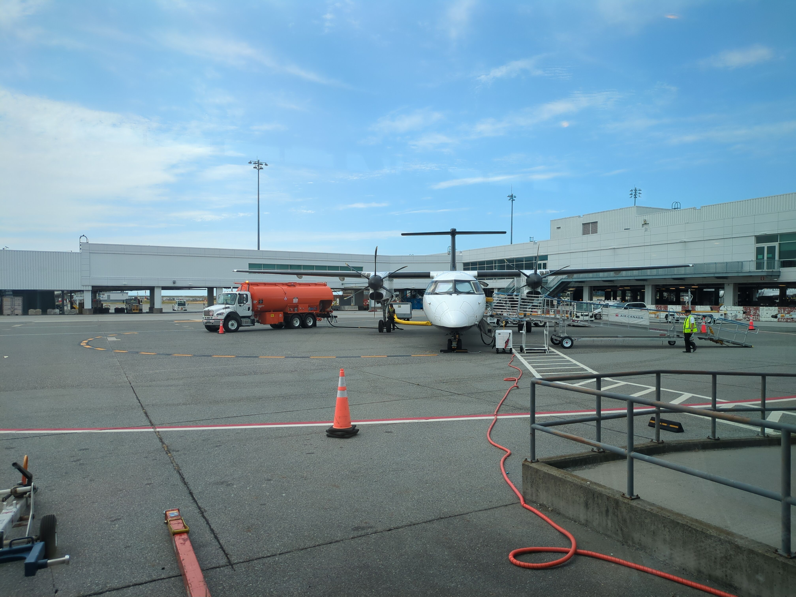
Hello, it’s the morning of the 18th of July, day after the flight. I woke up after about six hours of sleep, it’s about 8 a.m.
Right now the Sun is very bright outside so I think it’s time to wake up and start going against the jet lag
So I was advised by Lufthansa to be really early at the airport because it is still the tail end of Euro 2024 taking place here in Germany so expected high volume of passengers. Got to wake up at 6, head to the train station at 7, made it to the airport well in time, just after 8, luggage drop-off really easy, used the fancy terminal first time ever, everything is pretty automated so that’s nice.
Actually I still remember back in the day flying with with Ryanair between Poland and UK and having to check luggage was an absolute pain and waiting in queues for hours and here was just pretty instant, you go to the counter if you’ve checked in before then you just scan your pass and it prints you a label for your luggage, you put luggage on a tape and off you go. It’s actually pretty sweet.
Security checks without any problems passport checks didn’t happen in Berlin obviously because we’re flying to Frankfurt first. Had some food, second breakfast basically, then went to my flight gate when it was announced shortly after. Really I didn’t even have to wait much even though I was way early.
I took a little action cam with me to see if I can maybe record some footage and make a little compilation for people. A lot of people asked me for photos and some sort of narrative or diary around this trip so we’re gonna give it a shot, kind of inspired by Pete’s diaries. Diaries from his trips are always great.
So we got on the first plane to Frankfurt easy mode, only an hour hop, maybe even less than that. Got off in the, apparently, dreaded Frankfurt Airport and I have to say that was probably the simplest change. I didn’t have to walk far, there were no issues at the gates, no problems with passports, didn’t have to walk much basically means that you end up going to the airplane by bus but really I still feel like the the fact you don’t have to walk for miles and miles makes it a good change.
The flight to Vancouver was more colorful I would say. I ended up being seated on the aisle side on the right side of the middle row. Had fantastic trip companions, two ancient arab folks of some kind, an old grandpa and grandma who decided that they basically need the whole row to themselves, the whole four seats in the middle and they didn’t want to give space to other passengers that booked that space. They just wouldn’t even talk to the crew, they didn’t care and they didn’t really speak English. The crew gave up and gave passengers other seats, though I did end up sitting on my seat in their row. In the end they basically took three spaces out of the four and the grandma that was sitting next to me was… uh well it’s not manspreading but it works the same I guess… I felt quite cramped with her elbowing me for the whole eight goddamn hours…
The worst thing though probably was that she was just incessantly coughing without covering her mouth or anything and demanding non-stop attention from the crew, asking for drinks and food all the time, which I have to say the crew took on with a smile on their faces. They were very professional and nice about it, I would probably have gone crazy if I had to serve these people.
I’m not sure what it was. My instinct tells me there was probably some sort of a big family gathering or a wedding because there was a bigger group of these either Arab or Hindu folks on the plane because when we were asked to board at the Frankfurt Airport, boarding is supposed to commence in groups and every passenger gets a boarding group. First families with kids and disabled people board, then group one and group two, then group three which is supposed to make the process orderly. But this mass of people which I presume most of do not speak neither English nor German, at that point simply just stood in the way and waited at the gate completely disregarding the crew and basically blocked access to anyone with kids or disabilities or whatever group the staff were calling out. The staff eventually just gave up and told people to board as they are.
In contrast once we landed in Canada it was a completely opposite vibe. There were barely any people at the gate. It was a small propeller plane to take us on the last hop from Vancouver to Cranbrook. There was one older lady at the gate managing everything, she announced that the plane is very full and that she would like everybody to cooperate so that we don’t delay. But like, everyone just formed an orderly queue and slowly meandered onto the plane. It was very chill and calm.
Passport control and immigration ingress in Vancouver was really smooth. So before you come in as a Polish person, you need to go and basically link your passport to their ETA system, that’s what they call it I think. You pay $7 and then with your biometric passport and that ETA, you can come and go into Canada for as long as the passport is valid or for the next five years, whichever lapses first. Then you have to fill out the immigration form, which can also be done electronically. Lufthansa, when you check in for the flight, will tell you that you can go and install an app called Arrive Can, which I did.
I filled it out a couple of days before my arrival and it actually worked. So when I arrived at the airport in Vancouver after landing, before you go and see an immigration officer or whatever they’re called, at the little window, you go to a little computer stand and scan your passport. And if you’ve done the electronic immigration form, it’ll just make you accept what you’ve pre-filled and print your little piece of paper and that’s it, saving your time. I was actually surprised that it works because a lot of the time these government app things will just be trash. They’ll tell you, yeah, you have to do this and that. And then in the end, it doesn’t even matter. But no, this one worked.
Following that, I was actually grilled. Had a big quiz of questions to answer to the immigration dude. It was a younger dude. So I don’t think there was anything malicious or serious about this whole questioning. He was just checking me out. He basically asked me, like, nine or ten questions about where I’m from, why I’m flying, where I’m flying to, how long I’m staying. But the fun part is, like, a bunch of the questions he repeated seemingly to catch me out on being inconsistent, which actually, you know, it can happen after you’ve been on your legs and on the plane for, like, 12 or 14 hours at that point, being quite tired. But, yeah, no. It was all good.
Went through, found my gate, and, yeah, the rest was just chill. The last hop was was super easy and very chill on the little propeller plane was again an hour and a little bit later I landed. The Cranbrook airport is just fantastic, it’s basically one big room, you leave the the landing strip you go into a building and basically that’s it, that’s everybody standing there waiting for people, the luggage reclaimed tapes are there, and then you just walk out the other end and you go straight onto the car park. It reminds me of some of the super small airports in in the UK um or maybe like, smaller ones in Poland. Although even in Poland they usually have more than one room. I think midlands airport was a little bit like this although they had two rooms. They had the pre-passport-check and the luggage reclaim and then the room outside where people were waiting… But yeah it was very very cute. Brent found me no problem, obviously, didn’t have to search much considering the the location of my arrival, and then we went to town to do some shopping because I told brent to not bother buying too much without me, as I might as well go with him and check out what there is. This was actually kind of fun, he showed me his co-working space where he actually does his normal day job activities and it was pretty nice. We picked up a parcel and then went to a supermarket, which was kind of funny for me. It’s kind of like UK supermarkets. We tried to find some soft drinks… I was looking for something sweet but non-caffeinated just to help me cruise along for the rest of the day and address the jet lag a little bit so decided i want to find sprite. Yeah, it is turned out that in that supermarket sprite comes either in these massive two liter bottles or in six packs which you cannot unwrap. There’s no 1L, 1.5L, 0.7L or even a single 0.5L bottle at the drinks aisle. We did find a single small bottle in the fridge by the by the checkouts though!
So this is like peak North America right there if I’ve ever seen it, obviously you can forget about any reusable glass containers or anything like this, and all the small fruit is packed in plastic as well. They actually had a lot of organic fruit, which was surprising, however all of them were packed in massive bags, so if you want an organic orange: here’s 10 organic oranges, you want an organic apple: here’s a pack of 15 and so on. This feels really counterintuitive after coming from Germany where I can basically buy organic things as single items to my to my heart’s content and just take exactly what I need and not more. Again, this does also happen in the UK, but at least from what I remember when shopping there you generally buy bigger quantities to get a better price. So yeah, it’s throw me off a little bit.
So after doing shopping and getting some ingredients for a barbecue that Brent’s brother and sister-in-law were apparently preparing for us along with some other friends that were around, we headed back to indulge.
The first thing that I noticed arriving at the cabin and something that completely I did not expect and also threw me is that this place is full of hummingbirds. I’ve never seen hummingbirds, they’re so cool, and Aaron, Brent’s brother, puts out hummingbird feeders which are like little plastic containers with sugar-water, so the hummingbirds can go and sip a little bit at a time. They just hang them around the property and you can watch them just hover and buzz around. They’re super cute and tiny. Super nice and I completely did not expect this.
So then we greeted Brent’s family and the friends that were there, and all of their pets, of which there are many, there’s a dog and three cats. Well, I greeted the dog, the cats can go and do whatever they want, they’re not really interested. We sat down and went cooking and doing things around. Everyone was super open and friendly and life was just nice and chill and easy. Which is definitely something that’s much appreciated after being on your feet at that point for like 18 or 20 hours or something… In the end, we cooked some burgers, we ate some burgers. Had some chats, apparently I introduced halloumi to them, like they’ve never had halloumi cheese. Which is kind of crazy to think, as it’s super popular in Berlin and even in Poland. But yeah, I threw some halloumi on the grill and everybody liked it. So, plus one for me, I guess. Ended up talking to everybody. It was until about, well, 11 or midnight local time, at which point I was on my feet already for 26 hours. And then crashed in my own little cabin here, which is also super sweet. Just a single room with a mini kitchen annex and its own bathroom. And it’s just fabulous.
And that was basically day one.
Day 2
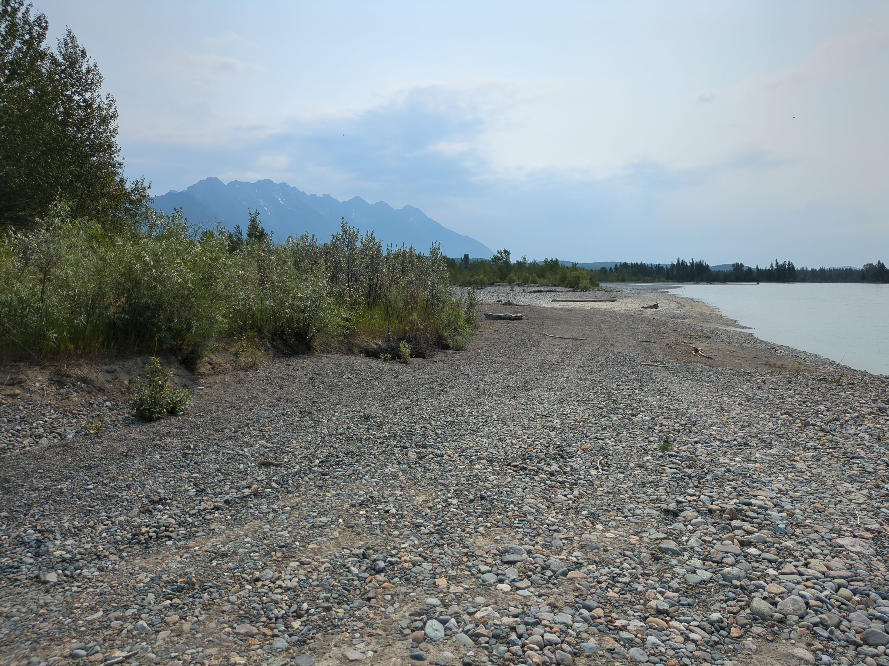
Great, day number two complete. It was bit of a lazier day, it’s probably okay to help with jetlag. Still following Garmin jetlag advisor and its suggestions seem to be working fine. Had an easy morning while Brent was finishing up some work, we chatted on and off a bit, checked out the bikes then had lunch together. After lunch I waited a bit then went for a run. I felt pretty good but when I started running, after about five minutes, my heart rate just spiked and wouldn’t come down unless I walked. Garmin scheduled me 55 minutes of running, but in the end I did just 30 because it was incredibly hot and hard to breathe due to local forest fires. Smoke in the air probably contributed to my heart rate spikes so it’s probably not only jetlag. But I mean, I did the run and that’s what matters. The area isn’t nice to run in. The views are nice, running through a forest along the river, but the floor surface was really harsh. It was either sandy or or full of pebbles.
The edge of the river and the riverbed itself, where it is dried out and you can cross sections of it, it’s just pebbles big and small, pretty rough to run on. Running through the forest itself there are actually no paths here. It is a pretty wild area, not really tamed in any way so you’re just finding your way through some bushed and forested over areas without any paths, trials or roads or anything.
So yeah, actually the reason I turned around where I did was not because I felt tired or i felt like i don’t want to keep running, but I just couldn’t really find an agreeable path to keep going forward in the direction I started. Maybe next time I’ll go a different direction, ask brent and we will devise a better route that will let me go a little bit longer. I know he did some 10k stuff and he wasn’t going in small loops so there’s definitely a way to go somewhere further I’m just not familiar enough with the area.
After I came back we finally got going on the bikes. The KTM that I got lent by Vance is basically brand new. I rode it up and down the hill here just to see what it feels like and it’s great. It’s super light, super easy to move, the handlebars are very straight and wide, so very easy to control the turns. I didn’t go far and it was a gravel road so I didn’t go fast either, just checking that it runs and starts and stops. The chain needs cleaning, it looks like it hasn’t seen any action in a while, there are spots of rust on it. We’re gonna go and get some proper chain cleaner today in town to clean both bikes chains and we already have chain lube to then lube them afterwards. So that’s that.
Brent’s bike… That’s a whole other story… So! Brent’s idea was that we have to replace the one broken indicator light. The light itself is fine, it’s just the the rubber gasket, like the rubber housing on which it is attached to the rest of the bodywork is broken, cracked, so in a pinch we could just tape it together really. But we do have a second identical bike that is a non-starter and that should have the light we need that we can just transplant. I tried to remove the the broken one initially, but it was a non-trivial/non-obvious and I gave up until we take a closer look together because I think instead of just removing the light itself which is what I tried you have to follow the the power lead of it into whatever junction box it’s plugged in somewhere behind the headlight behind the plastics, which is hard to reach. So we’ll do that later. The other thing that Brent said we should do is remove and clean the carburetors so we started disassembling the bike to get to the carburetors. We need to remove the tank and the tank had to be drained anyway. So yeah, a few minutes later we had the tank off, it was pretty easy.
Then we realized you can’t easily remove the carburetors without removing some other bits and bobs, so we started disassembly. We opened the air box amd we found that something was trying to nest in there and ruined the air filter. We hoovered up the remains of the air filter, which was just like bits of fluff, from the entry cavity of the air box. Then removed the ruined filter and added a new filter to our shopping list. Then we went to drain the tank. So the tank has basically one or two year old fuel in there at this point so it definitely had to be drained. Surprise surprise, that also didn’t quite work. The fuel tap with a little handle that lets you, you know, open the tank and put it into reserve, wasn’t draining. We ended up just removing the tap altogether and draining the tank, which was easy enough.
And then Brent decided we should probably, while we’re at, it take the little tap apart and see see what’s inside. See why the fuel is not flowing basically. Brent took it completely apart, cleaned out. All the little components, when they were laid out separately, had flow on their own. So we put it back together and it doesn’t flow again. So I’m not really sure what it is, Brent’s not really sure what it is. So our best bet is going to be, once again just, steal the tap from the donor bike and hope that will drain. At least we have parts.
I think that’s our plan and we should eventually get there. Next stop tomorrow, which is now today as I am recording, we should receive a new front tire. The front tire needs to be replaced and the back tire has to be swapped from the old bike to this bike so we’re gonna have to drive into town with all the bits and pieces, or maybe even the whole bike on a trailer and drop it off at the garage. Have them swap the tires, balance the wheels and then we’ll also ask them about the fork seals because the fork seals on this bike also look pretty tragic. And I mean, they will work in a pinch but it’s definitely not great if they start leaking, or even worse, if they already have leaked all there was to leak in the past and there’s not much oil left.
So yeah, there’s definitely a lot to do on this bike, and more than Brent led me to believe while we chatted remotely. But I was fully expecting that, so that’s okay. So yeah, in summary, we had a pretty nice lads’ day out in the sun fixing some some bikes and progress has been made. I think we’ll get there in the end. We’ll probably be able to ride bikes together sometime next week, and if not, then I can still ride my KTM already so everything is good.
That that was pretty much the day! So yeah, see you tomorrow!
Day 3
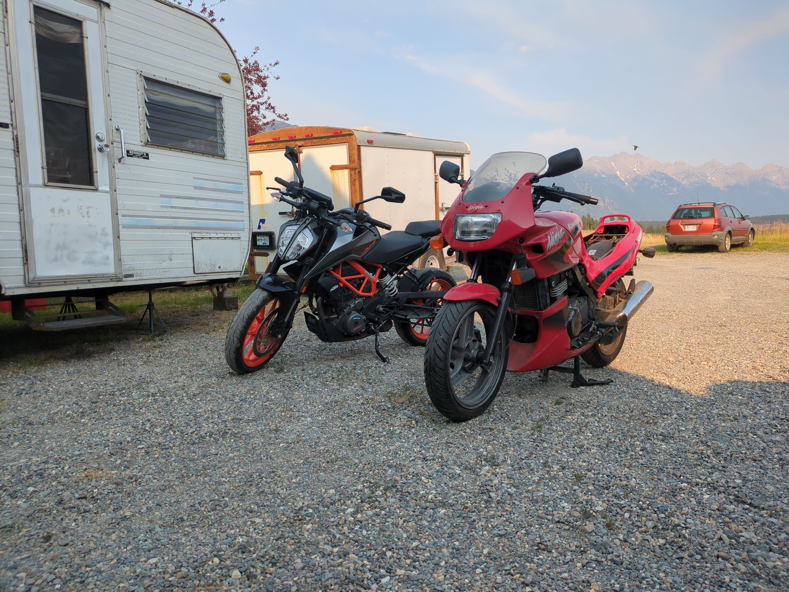
So another day passed, this one’s probably gonna be shorter as far as the log goes, because the day seemed kind of short. Brent ended up working way too late into the night the day before so yesterday I woke up at 8am, but he woke up close to 11. We basically spent the whole day working on the bike, but we did make good progress so that’s awesome. We managed to put his bike on the lift which took a bit of finagling, but we made it. We removed the front wheel, then cleaned it. We removed the back wheel on his to-be-ridden motorbike then removed the back wheel off of the donor bike. We decided we’re not gonna be swapping the tires on the two back wheels, but rather just use the back wheel from the second motorbike. Instead of just taking them both to the shop as they were, Brent has transplanted the disc brake rotor and the sprocket from the good bike wheel to the donor bike wheel, because this means that we won’t end up with only whole wheel when the shop is done with them. This way the tires stay on for both wheels, and we just needs the good wheel to be centered.
We checked the petcock again on the tank and it’s still not working, so we might have to see if we also steal that from the other bike. We’ll figure it out today. We asked the shop about the forks and they said it’s cheaper if we bring just the forks to them, instead of the whole bike, but they should be able to to reseal it and re-oil it as necessary. They said they should be all done hopefully by Tuesday. We didn’t make it to the shop yesterday, we just missed the shop closure with the delivery of the parts, but that’s okay because they wouldn’t have done anything till now anyway.
Next thing to do is to remove the forks, then we can bring everything back to the shop. The work on the bike stretched way too long yesterday but we kind of wanted to hit the goal and, you know, finish what we set out to finish on that day, and then actually hopefully make it to the shop. We didn’t make it to the shop but that’s okay because at least we completed the planned technical work. Bad thing is, I had breakfast at 8am and then we went to town at like, 5:30pm. We were in town just as the shop was closing and we only got to get dinner at about 8pm, so I didn’t eat for 12 hours and it really fucked me up. I was really hungry for most of the day but I didn’t want to eat any snacks or anything small because I always feel like it’s screws with me. Snacks just feel like they add calories to the pot but don’t satiate me, so I’d rather wait and have a real meal later. And the meal was really fantastic. We had really awesome chips with cheesy sauce and maple bacon, it was really really good. As a main I had a fried chicken burger sandwich, some more chips and a salad which was also very nice, although the cheesy chips were definitely the the highlight.
In the evening when we came home we watched some budget bike battle to hype ourselves up for the next day. Yeah short and sweet this time.
Day 4
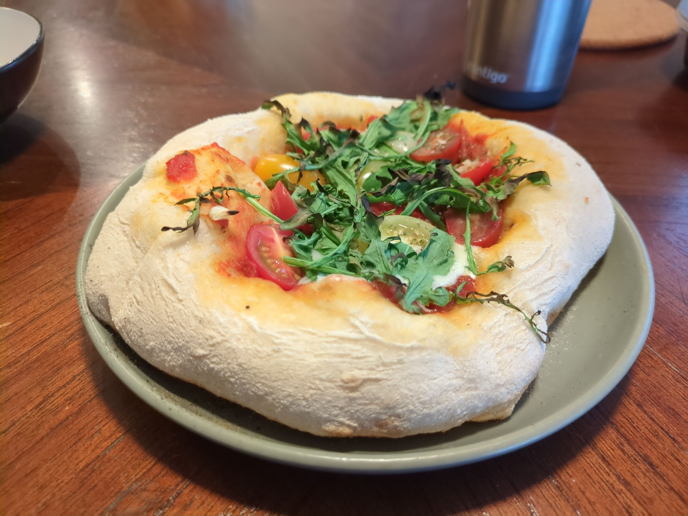
So after a short day we had a long day…
Saturday, even though I woke up late… I we went to bed a little bit on the late side on Friday after showering and so on, I think it was after one when I fell asleep and then I woke up at seven and was fully awake, which sucked but I managed to fall asleep. Took me like, almost an hour to fall asleep, and I slept again till like, 10:40 or something, and at the time I woke up Brent was already going to town to deal with stuff. He got the tires in the car, his brother started working on things in the meantime, I had breakfast, got dressed etc etc… Left to work on cleaning some stuff out and about and I said hey what is there to do should we do something… He gave me the keys to the ATV so that I can get down to the bottom garage and back up. I said let’s check out the other bikes air filter and see if we can steal it for the bike we’re rebuilding because the second bike, the one that’s not rideable right now, is not at the main garage but just down the hill, on the edge of the property.
It’s a bit of a hike to go up and down so… I got to ride the quad for the first time and it was pretty fun. I ended up going up and down three or four times because I needed to take the seat off, find the keys, then to remove the air filter you actually have to take the tank off, to take the tank off you have to take some of the fairings off, so yeah it’s a bit of a doozy.
I made it, managed to take the bike apart, just to find that the the air box is full of trash. Some sort of small animal made itself a house and the filter itself was not damaged but it was extremely greasy and not usable. So I went back up, brought all the tools etc, and I started making the plans with Aaron for what’s gonna happen during the day. I said that I’d like to make pizza for everybody because they have this nice gas barbecue which actually goes up to over 400 degrees and they have a pizza stone to put inside the grill. So I thought I’ll use my newly acquired superpower of fancy pizza dough making and we’ll make some pizza. So we called up Brent, gave him extra bits and bobs to buy, told him to buy a cheap laser thermometer so we can measure the stone temperature, and then get pizza ingredients and toppings which was great. He did it, we got the dough going by the time he was back. Actually we ended up getting flour from a shop just around the corner that was Brent-compatible, so we had two batches, one with just normal white flour and one with some sort of whole grain, ancient wheat flour, though still smooth enough for pizza, so that Brent can have it. And the dough turns out great, basically the rest of the afternoon we kept working on the bike together, the three of us, and managed to start it up. I also say Aaron and Brent were doing most of the work needed to start it up, they changed oil and cleaned out the carbs, did a bunch of things… We put the spare wheel back on just so that we can get access to the oil release nut at the bottom of the engine. Drained it, refilled it, added coolant, topped up brake fluid, and then I took the fairing off on the front and went again back down to the second bike to see if I can borrow a light indicator because one of the front light indicators on the bike we were fixing was kind of… Well, it was ripped. The the rubber housing that it lives in was ripped so it was soggy and it’s just not usable. I managed to remove one of the rear indicators, as for reason the bottom motorcycle doesn’t have front indicators at all, they’re somewhere but not on the bike. The the front and back indicators looked identical but when I finally managed to free the one from the bike downstairs, which wasn’t that easy because the the locking bolt was quite rusty etc, and a little hard to get to. But hey, got it out, brought it back up, and it turns out that it is ever so slightly different. Like, the back indicators and the front indicators, the housing for the actual light is the same but the part that attaches to the bike is slightly different… So yeah, wasted a bit of time, but hey, whatever…
Still, good fun riding the ATV up and down!
While doing all this, every half an hour I was flipping pizza dough to great success! In the end I managed to tape the old, kinda dangly, broken rubber indicator and I’m pretty sure it’s gonna survive our trip. Then I fitted them into the the fairing, no problem, nice and stiff in there. And that’s basically where we left it off so… Today I have to basically put the front fairing back on, connect all the electric connectors back in and then I have to take the back fairing off to… To kind of stiffen up the the back indicator lights, because they were loosened for transport and I need to replace their fitting plates with screws so that they stay in place. So yeah, that’s gonna be my job for today… And I think most of the stuff we still need doing is basically non-urgent because we’re waiting for the wheels, which will be ready either tomorrow or Tuesday, latest Tuesday…
Yeah, so to finish off the day we baked all the pizzas. I formed the dough into nice pizza shapes, Brent ended up putting toppings on the pizza and we actually saved half the dough and put in the fridge for for later because it was actually quite a lot. When I last made it, I made one batch, and we had four small pizzas, it was so great it disappeared, so this time I though we should make eight! But actually even with just 4 pizzas this time there was still some left because it was just so much… Still, everybody loved the pizza! It makes me happy because it’s so nice that Aaron and Kaylin let me stay here in their cabin, this whole area is so great, they let me use their equipment, have the food, so I thought it would be very nice to at least treat them to a little bit of nice food. So yeah, we’re probably gonna cook something more for them over the next few days, just to leave them with some nice memories after I’m gone.
Maybe they’ll invite me again.
Day 5
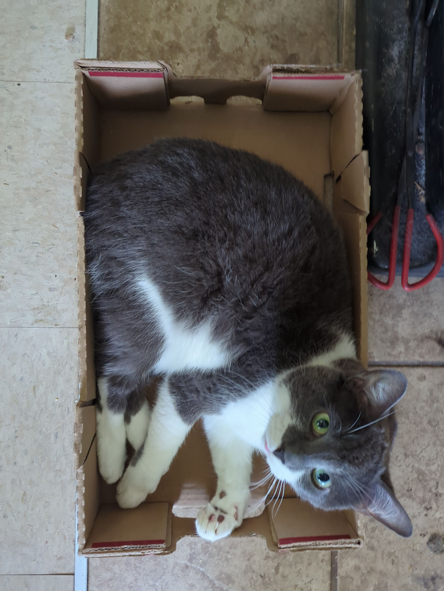
Another day another entry. Just wish I could remember what day number this is, because they’re all starting to blend together…
So last night was Sunday, that was mostly a day focus on the podcast. So I ended up agreeing to come on the podcast because I thought, why not, I probably won’t get a chance to do it again in a long time, so might as well. It also helps that the topics were something I could contribute on, so we were talking about GrapheneOS and Garmin watches. I actually just listened to the finished product because I felt like I was just rumbling, I was just going on about shit a bit too long, as I have the tendency to do… But it actually turned out pretty good! Drew, the editor, did a great job and I sound pretty cohesive and actually quite nice! But that basically took up a whole morning and half the afternoon… I got up, Brand messaged me say “yo, come around”, went over to his hut and we chatted a bit, started preparing for the podcast and had some fried eggs just because the podcast is like… Four hours? Four hours of sitting in the podcast studio, and that’s basically also at about the time that I get hungry… So, thought, let’s get fed, let’s get some drinks prepared… We had to move Brent’s furniture in the studio to make space for a second speaker, in a way that we don’t interfere with each other. Had a little problem with the sound, with technical stuff. We first tried to hook up two audio interfaces to one computer and do both audio streams from our side over to the JB studio from that, but there were some problems so we ended up just setting up the framework laptop and using that for me and then Brent was using his own laptop, and that works decently. Thankfully I had my own mute button so I could just mute myself most of the time and then unmute whenever I want to, and that worked decently. That’s pretty much it for the podcast stuff.
I wanted to that, this was pretty fun, pretty different and pretty goddamn swampy! The recording room was basically a sauna, I was completely wet, like, every inch of my body. So we decided to take a shower and and start making progress on things that still need to be made progress on for the bike ride to happen. But of course, we got derailed and instead of working on the bike or doing anything else, all four of us, Brent and his family, we just went to the to the river for a swim, which was actually quite nice and kind of crazy. Going into the river it felt extremely cold, so much so that I had problems breathing with my face under, which, I don’t know, I normally associate with water like below like 14 or 12 degrees… I thought it was like 10 or something… That’s kind of the impression I had, but I got warmed up, I managed to swim a couple of hundred meters, it was actually nice in the end I think you just needed to get used to it. I was so super surprised, the water was apparently 18 degrees! That’s what Garmin said afterwards, and I was like what the f… Crazy… So yeah I think it’s partly because I’ve stopped doing cold water swims. And I’m not used to it anymore. And partly because it’s a river, right? So the water is flowing, so you there’s an ever onward flow of new fresh 18c water, so it cools you down more maybe… Yeah it was kind of interesting because I’ve never swam in a river that actually has any visible flow, so swimming in Berlin for example. In Spree it’s basically just a super lazy river, you can’t even see it move, whereas here… We went to an eddy, this one corner behind the bend of the river, where there was no flow, and so you could go out into the river, have the river carry you a little bit, just on the edge of the river current and then you could just hop back into the eddy and then come back up. It was quite fun, I even made Brent actually do a little lap there and back so, great success!
Addendum: also interestingly last night was the first night I actually had proper sleep. I fell asleep easily, I was actually really tired at 11, I kind of fell asleep in Brent’s chair and then moved over to my cabin as we were watching some budget bike battle Italia. Yeah, first time I went to bed and I slept through the night all the way till 8:30 Thankfully I closed all the curtains this time, didn’t forget anything, which helps. But yeah, even my Garmin watch says that I’m finally up to speed now, which is kind of crazy that you really feel it like it makes sense, the HRV has dropped, the sleep quality metric has gone up drastically and… And I had uninterrupted sleep so, bravo Garmin as well… I guess and bravo me for returning to a normal human state.
Day 6
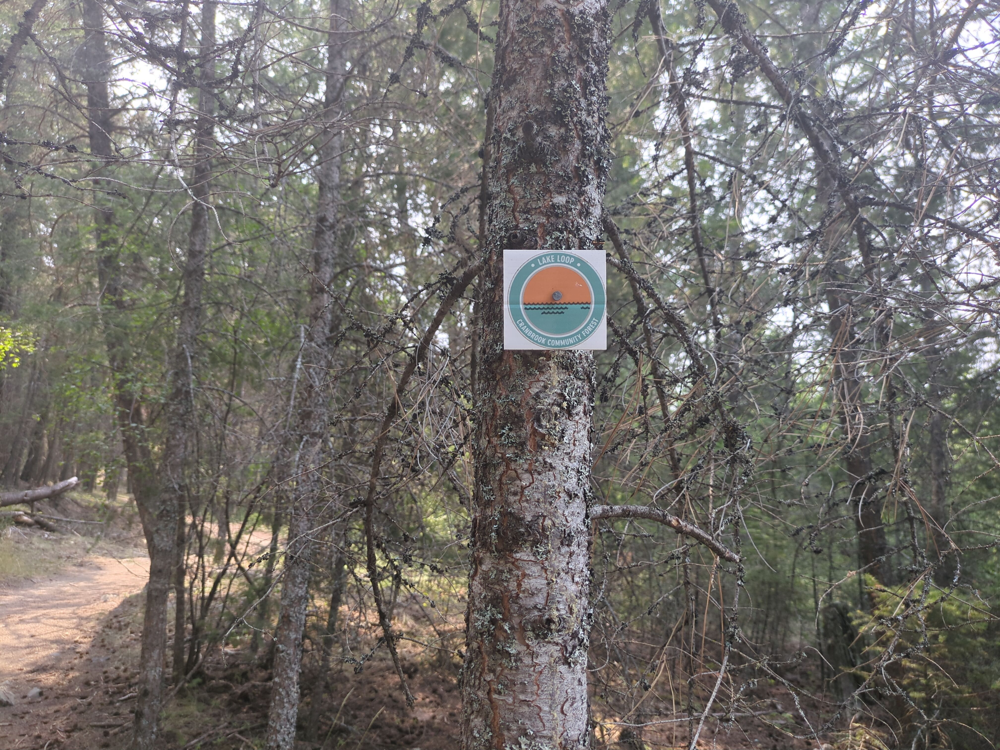
So yesterday, Monday, the first day we didn’t actually really do anything, any maintenance on the motorbikes. We got up, made a list of things we still need to buy and then realized time is running short if we actually want radios. And then after some short discussion, decided to pull the trigger on a couple of Sena radios that Amazon would actually still deliver to us in time. When we checked, next day delivery was available for the next 17 minutes as we were buying it in the morning. So, well done for checking it on time and actually getting it. Yeah, they should be here tonight.
So that’s the date. I’m recording the day after. So that’s going to be great! I think Brent is pretty excited about it. We’re actually probably going to leave the radios here for now after this trip so that Brent and Aaron can use them when they ride bikes, which he hopes they will, together. And then Brent can bring the radios back with him to Berlin in September when he comes around and then we can ride together again and also chat. So that’s really exciting. This is it.
And then the rest of the shopping that we needed to do was mostly in town. So we went to town. We also took our running gear because there are some nice trails just outside of town. We went for a nice 6K run. And the trails were actually really nice. Brent made me run through some fucking bushes to take a shortcut because he wants to get on the trail NOW. And now my shoes are just full of fucking sticky, spiky… Spiky shit, whatever this plant is. I don’t know. But my leg hair was just full of it. I was just like completely covered in this shit. But the rest of the trail was very nice. I took some photos and even a couple of videos. So there will be a backdrop for this later. And then we went and showered at this co-working place, which was great. People there are really nice. The shower knob for some reason was removable in my shower. And also the shower only has one knob. And it only goes left and right. So the pressure of the shower was also linked with the temperature somehow. So it goes from really cold and slow to cold and fast flowing. To then eventually gradually warmer and then slower again. I don’t know. But it was fine. It was a good shower. And then we went to have some food. He took me to this really old fire station kind of building that was turned into a restaurant. I think it was called the Fire Hall. And it was very nice. And the food was nice. And the people were nice and smiling. And everything was pretty tasty. I decided to go and try something that’s apparently Canadian or like local-ish. So I got a poutine with pulled pork. And it was really good. It was also really big, like everything here. So yeah, I decided not to have a starter or any sides. It’s just the main is just too filling. And they had alcohol-free beer. Which is actually great. That it’s just universally kind of available in most places now. Because I don’t have to look at the menu. I can just ask for alcohol-free beer. And I generally get something decent. Because people do surprise me. And they say, oh, would you like a drink? And I’m like, fuck, I haven’t looked. But then I also had the lemonade. Homemade lemonade. And it was super nice. But the thing was, there was quite a lot of sugar in there probably. Still.
Then we went shopping. And Brent took me on a crazy ride around town. So at this point, I came to town on my motorbike to give it a bit of a shakedown. Fuel it up. Test drive it. Put air in the tires. It needed some extra pressure. Yeah. And it was pretty crazy. So he was like, oh, let’s go to this shop. Obviously, we have no radio. We have no really good way to communicate. So I’m just following him. And he goes to one place. He’s turning right here, turning left here. And then all of a sudden, he’s about to turn left. And then he just changes indications and turns right instead. And I’m like, fuck. I feel like a dick because I’ve been indicating left for a while. And then I’m just going right. And this happened multiple times until we stopped. And I was like, what the fuck happened, Brent? I kind of thought I already knew. And he confirmed it. It’s basically almost all the places we’ve been to. Almost all the places we wanted to go to happened to be closed on Monday. So he did drive past, check it out. And then like, actually, it’s closed. So let’s keep going to the next one. Still, we managed to get a couple of essentials, which we really needed. We got a sunscreen. And we got some cream for me. I seem to have sore spots under my armpits. I think it’s just from sweating. Because it’s been really, really hot the whole time. And especially when I’m lying in bed, I feel like I’m just lying in puddles of sweat under my armpits. And I think that’s just starting to become itchy and sometimes painful. So yeah, I got a nice cream for that. We got the sunscreen. He got food for his cats. And then we got some apples and skyr. Skyr for me for breakfast/supper. And then apples so that I can make racuchy at some point.
Yeah, so things that we still need to get is a different helmet for me. There’s like a used store here somewhere or some sort of like equipment gear exchange place. And we can get quality secondhand things. So yeah, we’re going to try and see if we can find a helmet. Apparently, helmets are differently shaped here a little bit from European ones. So all of them, even if they’re big enough, they’re usually too short for me. Like my chin just sticks out and the bottom of my head in the back just sticks out. The only one that kind of fits or fits comfortably, let’s say, is Brent’s helmet. But then he wouldn’t have one if I use his. So yeah, we need to get a spare. And also I tried on Brent’s hiking boots. And they’re both decent and decently comfortable. But they’re both pretty high and I actually don’t have long enough socks. And I think they will just be rubbing and creating sore spots on the backs of my feet. Well, not feet, the backs of my shins. So I need to get some like nice long hiking socks as well for this. So yeah, so that’s to be done today. And then we obviously need to finish building Brent’s bike, which it should be surprise free. But you never know. To be continued.
Oh, no, wait, shit. And when we came back from shopping, we did planning. Okay, so that’s another one. That’s going to be a long recording. So we got maps. We can like type and draw on shit. We checked forest fires. There are actually a lot of forest fires. It was really dry recently. And then there were dry storms. And a bunch of thunder strikes actually caused pretty big fires. And some on the routes that we are taking, they will hopefully clear out by the time we’re going. So we should be able to go the route we want. But we designed it in a way that we can either go around the mountain range clockwise or counterclockwise. And since we’re going for three nights, the middle night is always the same. And that’s where we booked the hotel. So we should be able to get to the hotel one way or another. And not like waste that booking. And we can basically wing it whichever way we want on the way there. Hopefully it works the way we planned because I think the route is amazing. So yeah, we’re going to go first from here. We’re going to go through Windermere and Invermere up to Banff. Where we’ll probably have lunch of some sort. And then from Banff, we’re going to go to Lake Louise. Take a peek. And then from Lake Louise, we will go westwards. Hopefully if we can find the campsite to Yoho Park, which is just after Golden. (PS. Actually it’s just before Golden). So just west of Golden. We checked the campsite maps for Yoho Park and there were still three spots. But for some reason, the website does not let you book them later than two days in advance. And we just missed the deadline for booking one of those campsite spots. So Brent is going to call this morning and confirm that we can either do that or that we can do some sort of backcountry, i.e. more wild camping. And once we confirm the spot, we will know which kind of direction exactly we’re staying overnight there.
On day two, we will head from to Revelstoke, or as they apparently call it, Revy. And that’s going to be a really crazy, nice mountain pass through like some towns with glaciers on the peaks around them and things like this. Apparently lots of things to see. So that is by kilometer, I think the shortest hop from one day to another. But it might take us, quite a long time to just, you know, take it all in, stop around if we want and take a look and stuff like that. Then in Revelstoke, I decided to book a hotel that’s more in town. That we basically had two options confirmed by Aaron, Brent’s brother. One is more in town and one was just outside of town in a little forest. I decided to book the town location just because the town itself is apparently supposed to be nice. And I wanted to be more in a walking/short hop distance to things. I didn’t want to have to drive into and out of town after driving for fucking hours and hours before that. And then hopefully we can actually, you know, go and interact with some people and get some culture, culture, like local, local culture and just have a bit of a mountain town experience rather than only wilderness. And we’ll see. Then from from there, there’s a bunch of things we can do. I think there is some sort of a roller coaster. There are some hiking trails as there are everywhere. And there’s also a potential for paragliding in Revelstoke, which we will explore. Hasn’t been really settled or fully explored yet. We still have to do it, but I’m just happy to go to the hotel.
Then from Revelstoke, on day three, we will go to Nelson for quite a long distance. That’s going to be quite a long day on the bike, but it’s also supposed to be very pretty and windy and really motorbike, motorbike-awesome road. And it will include the ferry as well. So we need to look at the ferry. So south of Revelstoke to get across a very wide river, lake-ish kind of, you know, river basin thing. The ferry is every hour, apparently. Then we go back eastwards and then south. The route kind of overshoots Nelson. So then we curve back west down to Nelson. And in Nelson, like I said earlier, we have an in-town campsite booked. Nelson is supposed to be more low key. More low key and hipster, but like super, super nice and pretty and awesome place. Again, I think kayaking or canoeing is on the cards there. Swimming, hiking, a bunch of things. And the area is supposed to be really, really nice. So yeah, we’ll go there. We’ll stay overnight on the nice little campsite that still has apparently plenty enough of space. Then from there, we have a few choices on day four. So night three is there.
Day four, we’re making our way back home and that’s going to be Saturday. And I’m flying back on Monday. So I’m giving myself a one day of buffer. Yeah. And day four, we have two choices depending on how much time we spend in the morning in Nelson, et cetera, and how badly we want to get back home. We will either first head a little bit westwards. Oh, I can’t remember the names of the places, but there’s like apparently a really cool paved road that goes through like a side of an overside of a mountain. It’s quite nice and windy. We might take and then loop around back up to Nelson and then from Nelson because that’s west of Nelson. And then we’re going to go back east. From Nelson. Toward home. And there’s a few things we have on the list on the way there as well that we could stop and explore. So, yeah, that’s basically the trip. And we did all of that. We made the list of things to still like check out and figure out.
Yeah. So today is going to be mostly bike rebuild and finishing off a couple of planning bits and bobs. And doing a test pack to make sure that we know that we fit in our luggagey kind of packing bags for the motorbikes and that we have everything. Yeah.
More tomorrow.
Day 7
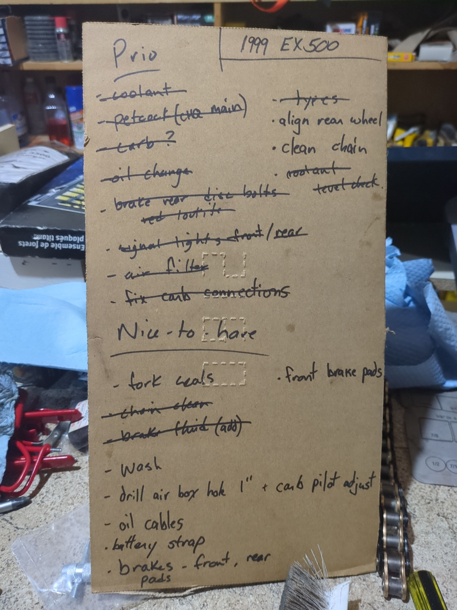
(Tomasz) So let’s record another entry. Come closer. This one’s gonna be with Brent.
(Brent) Hello!
(Tomasz) So what did we do yesterday morning? We got up. I hit up your cabin. We made some calls, right? We called…
(Brent) Yeah, we called Parks here to see about the campsites. And we found out nothing. First come, first served.
(Tomasz) Basically, yeah. But we might find out more. They said we should talk to the park administration here in Lake Louise or Banff.
(Brent) And then we called the motorcycle shop.
(Tomasz) Shortly after the tires were done.
(Brent) Yeah, like by 10 a.m.
(Tomasz) We checked Amazon. The radios didn’t arrive yet at that time.
(Brent) So we had coffee.
(Tomasz) Then we went to town, basically. We didn’t do anything else, right?
(Brent) No, that’s true.
(Tomasz) Just went to town. We got the wheels. And they kind of didn’t give a shit about my preload.
(Brent) Very much not.
(Tomasz) At the Kawasaki place. They’re like, yeah, that’s very nice. Smiley, of course. And then like nobody, nobody talks to us. There’s just no reaction. Default answer. You reach this part of the phone tree, you will not get no further.
(Brent) We’ll say everything but no.
(Tomasz) Yeah. And then I think we checked… You checked Amazon and then the Senas were delivered!
(Brent) Yeah, which is great.
(Tomasz) So, Senas were delivered. We picked those up and then we were hungry. So we went to grab food and we started tearing into the Sena boxes.
(Brent) So we got food at a place called Hot Shots, which is like a cafe, but they have some great vegan food. The drinks were good.
(Tomasz) It was really good food, way better than McDonald’s, that’s our foreshadowing, yes. We’ll do today tomorrow.
(Brent) Okay and then…
(Tomasz) We went to the outdoors shop, we bought way too many things!
(Brent) Yes we did! A new bottle, some socks…
(Tomasz) I found another one of the the soft flask bottles that I have but half a liter instead of 250ml and it’s even slightly insulated and it’s great, it works super awesome in my sling. It’s just squished into the sling and it doesn’t get scratched by the keys like the metal one.
(Brent) Feels like I need one! What else did we get there?
(Tomasz) Spray! I got a massive can of bug spray. Brent had slight anal pain when he looked at the size… He was like, you’re gonna carry this yourself, and I was like, man I need this bug spray!
(Brent) I was expecting something half this size…
(Tomasz) But whatever…
(Brent) We got a map there too.
(Tomasz) We got a map which we forgot to take, very helpful… And we got my socks. Didn’t try them on but they look good.
(Brent) Water filter?
(Tomasz) We got like, a water pump with a filter because… I have life straws at home but one live straw to share between two people is kind of awkward. If you’re in a pinch you’d rather just like be able to pump from some source and carry the water with you because we don’t know where we’re going to camp and how far the water source might be. If we, you know, wild camp tonight.
(Brent) We’ll take some Lake Louise water…
(Tomasz) We could filter some Lake Louise water just for fun! Like this thousands of thousands years old water with some ancient microbes… So, but then we came home and we just had to fix your bike, finish the bike basically.
(Brent) You worked hard.
(Tomasz) You mostly did the bike, I started helping you, I cleaned my bike, helped you with some stuff, I cleaned your fairings, did the the rest of the indicator lights and then…
(Brent) The droopy boy?
(Tomasz) No, this one I did the day before…
(Brent) Oh okay…
(Tomasz) I just did the back ones.
(Brent) Right, right…
(Tomasz) And then I decided it’s time to make the rest of the pizza because the dough is there and it’s got to be made and we need food so Brent carried on, I made pizza. The first one was a flop, literally a flop, because I prepared it too early and the grill took way too long to heat up, and then the pizza stuck to the board. But it was eatable… At least the dog liked it!
(Brent) Yep, he was happy!
(Tomasz) So what’s the name of the dog again?
(Brent) Fiddick.
(Tomasz) Fiddick surprised us with very high appetite…
(Brent) He’s only done that like three times…
(Tomasz) So clearly my pizza must be good for him to do that.
(Brent) The whole wheat one only!
(Tomasz) Yeah he ate both, one and a half whole wheat ones, and did not touch mine (plain wheat). I was kind of… To be honest getting tired and disheartened by the end of the day.
(Brent) Disheartened by what?
(Tomasz) By the fact that we still had shit to do in the morning. I wanted to be packed and ready, but we weren’t… The only thing we had left by the time we went to bed was basically chain cleaning and tidying up the garage basically, and packing.
(Brent) I would say from my perspective yesterday was very productive, it was the first day I got my bike on the road.
(Tomasz) You rode it right? You rode it a couple of times… And you had a bit of a bbb moment when your oil pressure was getting high?
(Brent) We fixed it, we fixed it… We got a check on that actually.
(Tomasz) Yeah, we’ll check it when we go back to the bike.
(Brent) Yeah, so that felt actually… Like it was actually going to happen! This trip yesterday, the inflection point.
(Tomasz) I have to say, when you started riding, you lost those bolts, and the fuel or whatever was getting into oil, I was like… Okay, it’s over…
(Brent) This is the end…
(Tomasz) But I don’t know,
(Brent) A little excitement?
(Tomasz) It keeps going, it keeps rolling. For now! Okay well, I think that’s it. We’ll do today tomorrow. See you later!
Day 8
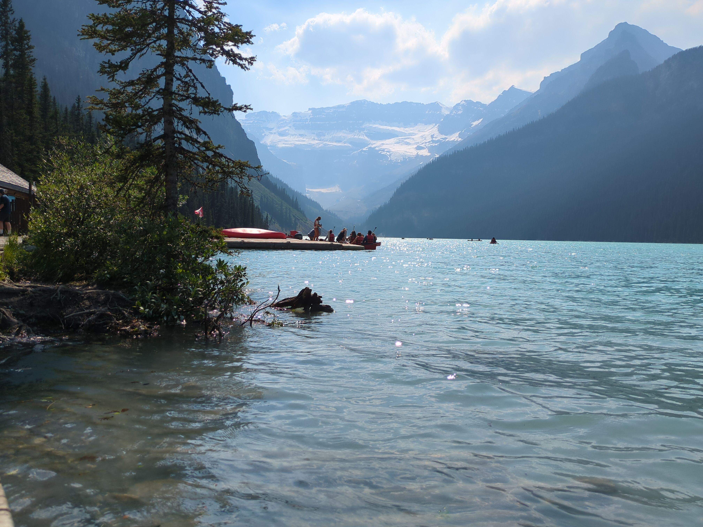
(Brent) Oh my god, it’s recording?
(Tomasz) Yes, it’s recording. Day one of the trip!
(Brent) Good morning.
(Tomasz) What happened?
(Brent) Ok, bye!
(Tomasz) We were supposed to wake up at 7 so that we can leave at 9. I woke up at 7.
(Brent) I woke up at 7.30…
(Tomasz) Yeah, but we did not leave at 9. We just had… The packing took ages in the morning. I have to say, I was a little bit pissed, because if I knew everything is going to take so long I would have just woken up at 9. I could have slept 8 hours, because most of the stuff kind of you had to do…
(Brent) I didn’t realize how much was all on me…
(Tomasz) Yeah, I mean, it was not something we could have predicted, but this is the main reason why I was annoyed in the morning. I could have slept, you know… I didn’t have to wake up. We had breakfast, had coffee. We put all of our stuff on the cart. Collected everything, found sleeping bags, tents mattresses… All the water containers, everything filled up. Went to the bike shed, bike garage, got the bikes out, put chain lube on both of them… You put your little chain fairing on. And then I basically loaded my bike up. I don’t know how we would have done it without me having panniers.
(Brent) Yeah, I know…
(Tomasz) There was no way we would carry… If that bike couldn’t carry panniers we would have been like…
(Brent) Suffering.
(Tomasz) Yeah, I don’t know, I mean, what would we have to drop?
(Brent) Less water for sure.
(Tomasz) Yeah. Thankfully we didn’t actually, I think we would have been ok for water, we would have had to just more proactively fill up in like, hotels or restaurants or whatever. But yeah, we wouldn’t have the bladder.
(Brent) Less clothing.
(Tomasz) I would probably have dropped shoes. Maybe even hiking boots.
(Brent) Same.
(Tomasz) And then we would be maybe ok. I would probably have enjoyed it more without the panniers, cause once we started riding… So we left at about 12 in the end, 5 past 12, 10 past 12, something like this… And the bike feels more or less fine, pretty good in, like, normal conditions up to like, 120, 130 km an hour. I did a little bit of a speed test just to get the feel for it, and after 150k it starts wobbling.
(Brent) That’s awful.
(Tomasz) Like, severely wobbling, very uncomfortable. Yeah, so I maxed out at 160 and I was like, no, I’m not doing anymore. Whenever we were cruising and overtaking, overtaking up to like 140, 145 and then going back down feels fine but not any more than that.
(Brent) Yeah, there’s not much reason to go that fast or anything.
(Tomasz) No, not really, it was more of a shakedown just to see how the bike behaves.
(Brent) Wobble down.
(Tomasz) Sometimes when I brake it wobbles as well.
(Brent) That’s the front suspension?
(Tomasz) Yeah, even if I brake from like, I think the front suspension combined with a lot of weight on the , on the panniers and stuff.
(Brent) At least you can brake.
(Tomasz) Yeah, so, how was your experience on the bike?
(Brent) it’s been a while since I’ve been on that thing, but it’s set up the same way as my previous motorcycle, almost identical, so that felt really nostalgic if anything. And, yeah, I forgot how crouched the seating posture is? Or at least maybe I’m less crouched.
(Tomasz) You have adapted the yoga position of a crouching frog on top of that tank.
(Brent) But the bike did alright! I think the brakes are terrible. Like they feel like garbage, so I’ve not really been using them, because I’m saving them for when I actually need them. Brake brake brake brake brake!
(Tomasz) Downshift, downshift!
(Brent) But, otherwise pretty good, like on the road it took a while to warm up a little bit but I think yesterday’s track was perfect for that.
(Tomasz) So where did we go then? In the morning we went up north, so thankfully the pass we wanted to take was no longer closed due to the fire. We have ridden past the spot where we had seen, like, burnt up grass and shrub on the roadside which is interesting for me. I mean for you this is nothing new but for me this is kind of new.
(Brent) Yeah the fire came right to the road.
(Tomasz) So yeah thankfully we could make it all the way to, like, north, on like a better mountain pass road than we would have otherwise… We stopped briefly in Invermere to just take a sneaky, cheeky photo of the lake, Lake Windermere. And then we tried to have some food. Yes, I don’t think what we did could be categorized as food.
(Brent) The poutine queen would have been great…
(Tomasz) Yes, so everything was kind of closed in this one little area where we went except McDonald’s and I was like, ah fuck it. I was actually really hungry then because I had breakfast quarter past seven, right? And it was like, 1.30, 2 or something… Normally when I’m at home I start suffering at 12 if I don’t eat at 12… That’s the problem, it was like after 2. I was like, I have to have something, so we had McDonald’s.
(Brent) McDonald’s in Invermere. It was terrible.
(Tomasz) Like, the pictures, the goddamn pictures on the machine, they looked like food. You see the burger and it’s like, bacon strips inside, nice chunky piece of meat and some other bits and pieces. And then it comes and it’s just like, it’s fucking flat like someone sat on it, there’s like barely any fucking burger inside, and two tiny measly like, thin slices of bacon. I’m like what the fuck is this. The chips, the salty chips, I think they were, they were just chippy salt. It was mostly salt. A little bit of chips. The drink was okay but that’s just because you can’t really screw up sugar.
(Brent) The best thing I think was the egg sandwich.
(Tomasz) Tt was okay.
(Brent) I took the egg and you had the sandwich.
(Tomasz) I had better. I had better morning egg sandwich in McDonald’s in UK. And they say the UK McDonald’s is apparently considerably worse than on the continent in EU, and that was still better than this. It’s like, you come to North America you expect the OG experience, and you just get fucking shafted. Like what is this…
(Brent) This is the OG experience.
(Tomasz) But this sucks! I’m like, starting to think that, actually, consumers… Not just consumer protection but consumers themselves, what they are willing to put up with and buy has really dictated that outfits like McDonald’s and Burger King and all the others, they actually have to put more effort in…
(Brent) There is like McDonald’s tourism, because every McDonald’s is a little regional and they get to do their own thing.
(Tomasz) Yeah, but I have a feeling that on the whole, if you go to a fast food restaurant in Germany you’re gonna get better food than here.
(Brent) Yeah definitely.
(Tomasz) Even though I’ve only been to McDonald’s, but I don’t really want to try the others after this. And oh my god have you seen that like, birthday party thing?
(Brent) Yeah, they couldn’t even sing!
(Tomasz) This is the saddest McDonald’s birthday that child had, it’s just like dad and two kids and these three guys came to sing happy birthday to this poor kid. When you’re fucking traumatized at least for the next month, like holy… I don’t know.
(Brent) Enough about McDonald’s.
(Tomasz) So what happened after?
(Brent) Well then, then we drove like, 10 minutes into, uh, Fairmont hot springs.
(Tomasz) Yeah.
(Brent) And then we went around the roundabout and started on the mountain pass.
(Tomasz) Ah yes.
(Brent) Do you remember that initial like, kilometer? That was the impressive.
(Tomasz) Because all like, you’re driving like through town, and all of the sudden there’s just like… Cliffs around you. Like just rocks, like rock walls on both sides. It was very pretty.
(Brent) It’s almost like a natural arch that you go through, almost.
(Tomasz) Yeah it’s very exciting. Very different, like… The only thing I can compare it to that I’ve been in is probably. um… Driving around the cliffs in Llandudno in Wales. There’s this, like, peninsula, and they carve the road basically into the cliff side and you go around it and you have like cliffs, sheer cliffs and even overhangs and you go like around this peninsula and there’s just like a sheer drop and sea on the outside. So this is kind of a similar feeling.
(Brent) And then there was a mountain goat.
(Tomasz) There were a bunch of mountain goats.
(Brent) Oh we saw one…
(Tomasz) We didn’t stop to milk them.
(Brent) They’re not milking goats.
(Tomasz) Well, I said, you could try… Just make sure it’s a female goat before you start milking.
(Brent) Well it depends what you’re into.
(Tomasz) Yeah, so yeah, and basically that was the funnest part of the day. I would say. I was able… I was still a little bit behind you all the time, I was basically catching you up on the straights, because I was worrying that the wobble will get worse in the corners. I also wasn’t sure, like, the front feels like soft and squidgy, and it’s sometimes… I lean in the corner and I have to lean with my body weight, to lay the bike over and then as you do you just accelerate out of the corner, to straighten out. But I just… It wobbles as well.
(Brent) Oh man that’s terrible.
(Tomasz) In the corners a bit. I think it’s mostly because of the soft front, like it doesn’t, it doesn’t exit cleanly, it exits like this…
(Brent) Oh gosh really?
(Tomasz) So I’m a little bit slower in the corners than you are.
(Brent) Well good.
(Tomasz) I just try to catch you on the straights, just not to get left behind. Thankfully as long as you stay in the power band it accelerates pretty quickly, so it’s not a problem. Yeah and then we basically decided, because we were so late, and I mostly didn’t want to stress about getting here on time and like, finding the campsite, because we did not in the end… I mean we didn’t have a reservation, so I was like, I don’t want to risk it. I don’t want to be like looking in the middle of the night… Or just, not in the middle of the night, but like, by dark looking for a campsite. Like, let’s skip Banff, straight to Lake Louise. So, we stopped there, it was nice. It’s a nice lake you have there! We took some photos.
(Brent) It’s like, the spot you have to go.
(Tomasz) Yeah, we dipped our toes, it was very smoky.
(Brent) Yes. I’ve never seen it like that.
(Tomasz) It was extremely smoky. Like when we are at your cabin, and you see it from a distance, it’s like “yeah yeah okay”… You can even sometimes feel the smoke in the air. But there it was like proper smoky. It was like smoked bacon smoky.
(Brent) The sun was just like, a fireball.
(Tomasz) Yeah, it was like, blazing red. Yeah, and then we missed the entrance to the visitor center, so we went straight to park.
(Brent) Oh no…
(Tomasz) It was like, “yeah no problem, it’s open until like 8 or something, whatever”, I was like “okay fine… probably not…”. But hey, I don’t think we’re gonna… We said we’re gonna stay there for like, half an hour. It was like 4 something, when we entered. We went up to the motorbike car park, there was a nice older lady, greeted us there, it was pretty neat. We went to dip our toes in the cold water, I considered jumping in a kayak, but that shit ain’t cheap.
(Brent) Proper tourism prices.
(Tomasz) $150 was it?
(Brent) $150 for half an hour, $160 for an hour.
(Tomasz) Yeah, I mean, I don’t know if I… If I just had more cash flow… If I just had like… Piles of cash on my account for no reason, I’d just do it, just because. I wanna make sure that this trip can continue, so I decided to skip the kayaks. We have to pay for other things too. Uh, so, we went to have food in a restaurant, the restaurant was like the nice fancy restaurant with the, was it called, patio? But the outdoor area was close to tourists because they were, they were moving guests from establishments in Jasper. Because Jasper was shot down and evacuated due to the fires, but there was a smaller like, downstairs restaurant place at this fancy hotel, that we could go and have food and the food was really nice. And yeah I ordered fish and chips. It was a lot.
(Brent) Yeah it was too much.
(Tomasz) I don’t think I ever ordered a fish and chips, and got like, two full fish fillets. I was like, wow! And it wasn’t even like, outrageous considering like, price wise. Because you do get a lot. And it is a high tourist spot, so it was a premium, but it wasn’t like, unacceptable.
(Brent) Just slightly more than McDonalds.
(Tomasz) Yeah, what was strange, was that when I was paying, and it says “do you want to pay a tip?”, and the smallest percentage that is on the auto screen, was like 18%… I was like, what! I’m not paying 18% tip! Get the fucks… So I went and manually typed in 10%. Because the lady was nice. I wasn’t gonna not pay a tip, but I’m not paying like 20 something dollars in tip. I was like “come on, what is this?”. Yeah, and then we found the visitor center, just in time to not be in time. We go in the door and the guy is like, “oh you guys know we are closing in two minutes”. Great! Thankfully, we basically missed out on nothing. They didn’t do a fucking shit. We went in and they were like “yeah there are campsites, here’s a map of the wrong region, good luck! be on your way out please! you want to pay? oh yeah you can just get out and pay on the machine”. And then the machine was like, “yeah, if you cannot pay, then you can just pay on the next day”. And we were like, why is that? Because the machine doesn’t work! Yes the machine is borked.
(Brent) How many tries did it take you to get the machine to work?
(Tomasz) 3 from me, and probably 3 or 4 from you until it actually took our money.
(Brent) And I think we did it wrong in the end.
(Tomasz) No I don’t think so…
(Brent) No?
(Tomasz) No, because we had 2 vehicles, and we paid for 2 vehicles.
(Brent) No, we paid for 2 people.
(Tomasz) Yeah, that’s fine, you don’t pay for a vehicle… Like that’s the thing, right?
(Brent) But then we got to the campsite here and it says each vehicle needs a permit…
(Tomasz) Well that’s ok, there was no option to have, 2 like, separate… I think it’s the same amount, and I don’t think anybody gives a shit. We did our best. We tried to give them money! It’s not our fault we don’t want to take it. The same about the campsite. We need to still figure out how to pay for this campsite, it’s the next day now. So, but I think there are some other people who also came here like, spontaneous, so we can also ask, if we are in a pinch or whatever. I don’t know we can maybe donate somewhere online to them later. “Sorry, we tried to pay! Couldn’t, so here’s some money!” So we left…Oh yeah, we did a bit of shopping, which was actually pretty nice. They had pretty good amount of stuff.
(Brent) For a small place, good selection.
(Tomasz) And they had a bunch of like, organic and natural things as well. And then we were off to call…
(Brent) Fuel.
(Tomasz) Oh jesus this goddamn fuel pump… Fuel pump just didn’t work, like you put money, and then you press the button, and then you like, press the thing, the handle on the fuel pump, and just, nothing happens.
(Brent) And the guy inside, you couldn’t hear him, but he’s like: “oh yeah he just has to squeeze the handle”. I’m like: “he’s squeezing the handle”.
(Tomasz) I was showing you right!
(Brent) I know! It was so obvious…
(Tomasz) And so, what did he do did he just like cancel my transaction?
(Brent) He just cancelled everything we tried again and then it worked. I don’t understand it.
(Tomasz) And it kind of worked because it like… It had no like, it was not an analog trigger, it was like, the full on or full off, so fucking splashing fuel!
(Brent) Oh God!
(Tomasz) Because you know, if you want to actually fuel the tank you can’t put the, um, the nozzle all the way in, because the tank is shallow and the moment the fuel reaches the nozzle it will stop fueling. So you have to pull it out a little bit. But because it’s just going full bore, just like fsjduf23h32ur!!!!! everywhere… Yeah, terrible. Terrible fuel station. One out of five stars, would avoid. Yeah, but then we fueled and we got here, and it was actually a pretty short hop, but it took a while to go up this mountain pass. So the pass from like, the main road/motorway up to Takakkaw Falls… You liked it a lot. I was less impressed.
(Brent) You said you didn’t like it.
(Tomasz) I would have liked it on this bike if this was empty and the suspension was firm. It would have been amazing. But the suspension was not firm, the bike was loaded and I was just struggling to keep up with you. And I couldn’t even hear you talk because of the mountains were in the way.
(Brent) You’re like 100 meters away and I can’t hear you, because of the mountains in the way.
(Tomasz) Because you’re like, you go around the bend and you’re just gone. And I’m like, I don’t fucking know.
(Brent) I almost dumped it on a switchback.
(Tomasz) I saw it and I took care to go slow, and like, took a nice wide… Well actually I didn’t go so wide, I just like feathered the clutch and did it in the first gear, so it was fine. But yeah it’s definitely, so this guy, this random motorcycle this guy we met at Jasper, said that this and up to… Yeah, and up to Lake what is it called??
(Brent) Lake Emerald?
(Tomasz) Lake Emerald? Is like the best biking roads and I can definitely agree. I just need a good bike.
(Brent) Well maybe we can take some weight off of your motorcycle and put it on…
(Tomasz) No I don’t think it’s gonna help… I think it’s part weight, part suspension and part just aerodynamics, because this bike is way lighter, so… Which means that wind, the way it goes around the panniers and stuff, has also more of an effect. So unless you remove the panniers altogether, I don’t think the handling will change much. This is my issue. Again, it doesn’t make it not fun, it just means I can’t keep up with you. I just have to go a bit slower because it’s not comfortable. But that’s fine. I mean, it’s better than not going. Just imagine going by car.
(Brent) Oh, it would be so lame!
(Tomasz) So yeah, I keep saying this, this is more of a reflection than a complaint.
(Brent) Yeah, better than no bike.
(Tomasz) Yeah, exactly. So yeah, we made it and we walked around. I was just like, I just don’t want to do anything.
(Brent) You were grumpy.
(Tomasz) I want to camp, I want my goddamn tent. I want to know we are done. I don’t want to be like searching for anything anymore. I just want to relax now.
(Brent) So where are we in the end?
(Tomasz) So we are at Takakkaw Falls. I think this is called the Takako Falls Camp.
(Brent) I think so.
(Tomasz) I don’t remember it having a different name. So we are basically in between like two waterfalls. One is like really, really big and one is medium big. Or probably was big earlier in the season and now it’s just a little bit dried out. And it turned out the camping site here that was supposedly full to the brim based on the website is like, half empty, more or less. Okay, not half empty, at least a quarter of spots here are not reserved or not taken.
(Brent) But when we looked, there was one campsite.
(Tomasz) There was one… There was either one or two. I think there was two and we just chose one. That was the one we wanted more. That was number three. But then we came here and there were a few. And I met all the… I heard other people talking that they came here also without reservation and they found spots. So something is wrong with the reservation system or something.
(Brent) Which worked in our favor at least.
(Tomasz) Well, it worked in our favor in the sense that we found a spot. But it also worked against us because we weren’t able to plan accordingly.
(Brent) True.
(Tomasz) Ahead of time and I was stressed anyway, that we would have to look for this. So… But yeah. We folded everything out. Tent is here. We had some snacks. We went for a nice walk. We found a really cool little like, bridge over this like, waterfall river bed. Really nice clean water. We’re probably going to go pump some water.
(Brent) Yeah.
(Tomasz) To refill our sacks. Even just for fun. Just to see how it works. And then we found a nice like very hard flowing river. Over some like rocky area. In general it’s very nice. And the trail is very nice, hard packed, well maintained it seems like. So definitely a spot worth recommending I’d say. So if you have some other friends who like want to explore.
(Brent) Okay.
(Tomasz) Explore the area. Don’t you think?
(Brent) Well I was, I don’t know. I wasn’t sure what you would say. Because it’s the first time you stay in this style of campsite. And I wasn’t sure how you felt about it.
(Tomasz) Well it’s just a campsite really. I mean you sleep on the ground. The thing is the camps are, the tents are spread out quite far apart. In comparison to what I’m used to.
(Brent) Like we can’t really see anybody from here.
(Tomasz) No. Like, you see people walking past on the path. And yeah. If you stand straight and around you can see tents like, somewhere. But not anywhere near you. So. You know. I mean. Campsites are just like this here right? So out of. Like the campsite set up itself aside. The location. And the way to get here. And I guess the hiking opportunities. They seem pretty decent.
(Brent) Yeah I agree.
(Tomasz) So yeah. And then we went to bed. And then we watched some BBB. And then Brent just fell asleep. With like this half crouched position. He was just watching with his eyes closed. And then I decided to also just doze off. Cause I was like I couldn’t. I didn’t feel tired until I laid down and we started watching. And then I was just like off. So good day.
(Brent) Wait! Then there was that crack of lightning. Do you remember that?
(Tomasz) That was in the morning. That was the next day.
(Brent) Oh! Amazing!
(Tomasz) See you later!
(Brent) Bye!
Day 9
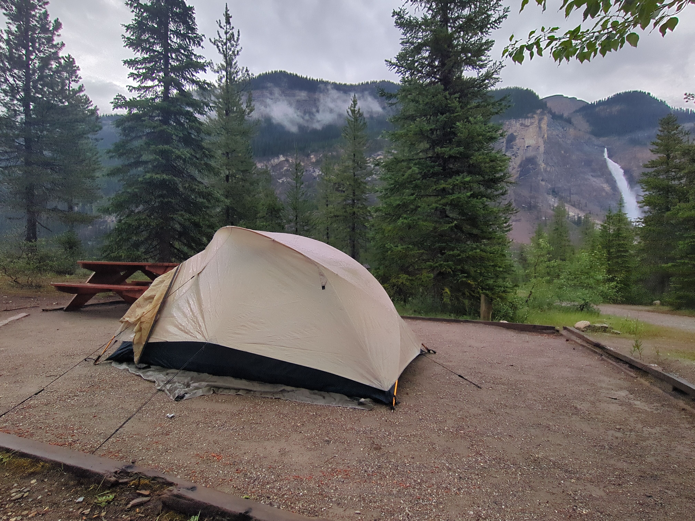
(Tomasz) Yeah, there is a fire. So we’re on the ferry.
(Brent) Yeah. Which ferry, Galena ferry?
(Tomasz) So, what did we do yesterday?
(Brent) Oh, right… Wow.
(Tomasz) We woke up and it was a thunder storm that walk me up.
(Brent) Lightning strike. That was crazy.
(Tomasz) Yeah, you didn’t seem to give a shit. I was like…
(Brent) Meh, it’s normal…
(Tomasz) It was yeah, I was… I had my eyes closed and I saw the flash and I heard it almost immediately, I was like, fuck! Super close.
(Brent) It was loud too.
(Tomasz) Yeah, so we packed up without much trouble. It was wet. It was kinda raining. We were chickening out like: “eh, let’s wait a bit more till the rain goes away”, just watching budget bike battle. As you do… We packed up, took all of our gear back. It didn’t rain at the beginning of the bike ride, right?
(Brent) No, no, we did the downhill with all the switchbacks.
(Tomasz) Yeah, so down. Yeah, I tried my riding condom for the first time.
(Brent) Oh, yeah!
(Tomasz) And on the switchbacks it was fine, but when we… When we hit the road later, it was too… Yeah, it was too much like a flag whipping in the wind, just like throwing me around.
(Brent) An inflated condom!
(Tomasz) Yeah, pretty much. Yes, I had to switch into my jacket, thank God I have my normal jacket, because I’d be drenched and cold.
(Brent) Oh, yeah.
(Tomasz) Yeah, we had to wait for a train for a very long time on the crossing.
(Brent) On a trail.
(Tomasz) Yeah, so we try our trail, we try to go to have some food because I was “hangry”.
(Brent) Yes, you were.
(Tomasz) We didn’t have breakfast really. I was like: “I want a warm breakfast and I want something warm to drink”.
(Brent) It was kind of late too.
(Tomasz) It was late, as it always is when we leave.
(Brent) Today is better.
(Tomasz) Yeah, because we had a deadline of 11 for the hotel checkout. But yeah, so we waited for a train like a good 10-15 minutes.
(Brent) It was terrible.
(Tomasz) Then we waited another 5-10 minutes for entrance allowance.
(Brent) Oh, it was more than that.
(Tomasz) Yeah, we waited for a while. Getting to the restaurant in the field because there were so many people. And then we just had a generally horrible ride.
(Brent) Yeah, we did.
(Tomasz) We took a look into Golden. A wonderful little city.
(Brent) Oh, we saw nothing of interest.
(Tomasz) Yes, we will go there exactly zero times in the future.
(Tomasz) Yeah. Let’s do that. Yeah, and then we just suffered in the rain.
(Brent) This is a large highway with lots of wind and lots of rain.
(Tomasz) Yeah, we were just playing the game avoid the truck. Basically.
(Brent) Stay out of harm’s way.
(Tomasz) Yeah, we stopped for a quick coffee at one point. Oh, thank God I had these heated handlebars. It kept me sane. I was like, this is the one thing that kept me sane.
(Brent) You missed a part. We left trail on which motorway?
(Tomasz) Motorway? On which way?
(Brent) I was going to call it a trail. That’s more accurate.
(Tomasz) Yeah, Brent found a shortcut. Like, let’s not wait for the train anymore. There’s a shortcut here. Or like, you know, you can cross the rails without crossing the rail track in a way that, you know, you get stopped. And it was fabulous. It was just a great little green lane. I had lots of fun. My soft suspension came into its own for the first time.
(Brent) Finally, you’re leading at someting.
(Tomasz) Massive potholes.
(Brent) Oh, it’s just muddy too.
(Tomasz) Muddy. The mud was the worst.
(Brent) I do not like the mud.
(Tomasz) Yeah, so potholes and like when even terrain and gravel and even the big rocks were fine. But the mud, that was…
(Brent) ..like a lot, yeah.
(Tomasz) Whipping around. Crazy. Yeah. Then we finally arrived in Revvy and the sun came out again, just as we were finishing. A little bit of sunshine. The hotel was pretty nice. I wouldn’t call it like the best thing ever.
(Brent) No. It was fine.
(Tomasz) But it was comfortable and it was convenient.
(Brent) Hotel.
(Tomasz) Yeah. So we went to town for a quick, quick nibble.
(Brent) And to see what it was about.
(Tomasz) And to see what it was about. Yeah. I was hoping for more people?
(Brent) Yeah. Me too.
(Tomasz) I was hoping for more single ladies.
(Brent) All the single ladies!
(Tomasz) It was mostly either families with kids or a couple of couples. It was a lot of Germans, for some reason. A lot, yeah. Out of that like, 10 people we saw it was like four or five Germans at least. Yeah, it was really empty. I’m really like, surprised. It’s supposed to be high season. Although Revvy is not necessarily like, the destination for high season… I mean, Lake Louise was packed.
(Brent) Yeah yeah yeah…
(Tomasz) So we over-committed, ordered too much food because that’s what you always do when you’re “hangry”. Now we still have pizza in my pizza slot (i.e. laptop sleeve). We went back and we jumped in the hot tub, yeah… Surprise hot tub was good! We met some guys, basically anybody we talked to was just like, cool and chill… You just talk to them and chat about random shit. Yeah, there was a… There was a guy from, where was he from? The local? He said he studied in Crambrook?
(Brent) Well, he’s likem near Edmonton.
(Tomasz) Yeah, so Mike lives near edmonton and then he has a co-worker, James, who’s from South Sudan, he’s just working there as well. Yeah. And then we packed it in and went to bed. We… Oh yeah, I washed my clothes and they just didn’t dry. There was no draft in that room. Even with the both windows open there was no draft really.
(Brent) Even with the clothesline.
(Tomasz) Yeah, my thermal base did the best out of all the clothes I have, but that’s to be expected, that’s what it’s for. Quick day. Many events, not many that you’d want to remember.
(Brent) My bike stopped leaking fuel.
(Tomasz) Oh yes, your bike stopped leaking fuel. I need to be honest, I kind of now I’m really hyped for heated grips, but I don’t… I really don’t want to install them. I don’t want them on my bike, even though I want to be able to use them… I really wish I had a bike that just came with hidden grips.
(Brent) Just get some muffs!
(Tomasz) Yeah, I don’t think… I think i’ll skip muffs and i’ll go straight to muffins!
(Brent) Okay.
Day 10
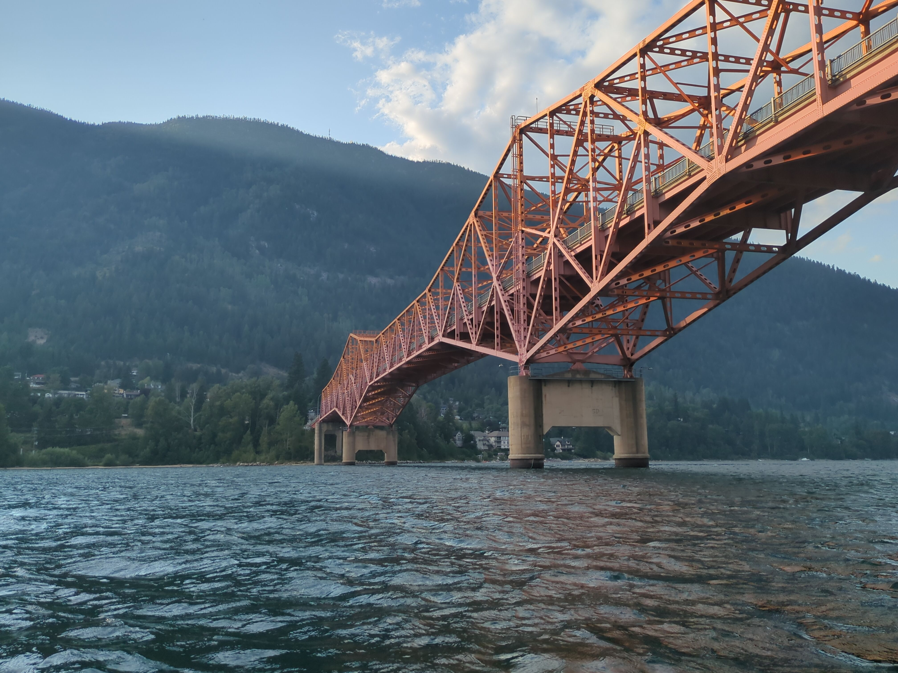
(Tomasz) Morning.
(Brent) Hello.
(Tomasz) What happened in the morning?
(Brent) What happened yesterday?
(Tomasz) Where were we? Ah, we were in a hotel in the morning.
(Brent) Oh yeah!
(Tomasz) Forgot about that already.
(Brent) Great parking spot. Breakfast.
(Tomasz) Mediocre at best.
(Brent) Yeah.
(Tomasz) We got up and went to get hotel breakfast. I decided I just wanted, since it’s already included in the price, I might as well try. And trying I did. The less said about it, the better. The coffee was okay. It was not as bad as in Deutsche Bahn, but it was not as good as, you know, good coffee. They didn’t have like fried eggs. They had this like egg cheese puck thing that you can put in your bread or in your mouth or whatever. Anything goes really at that point. The sausages were basically just like… I had one just to try. I just wanted to see how bad they were. Because they looked bad and I knew they were going to be bad. I just wanted to see the scale of badness.
(Brent) How bad? Oh my gosh.
(Tomasz) I think even English sausages are better and that says a lot. They’re bad.
(Brent) Okay.
(Tomasz) But whatever. I mean, they didn’t taste bad. They were just not really sausages. It was just like… I don’t know. Like the texture and the consistency wasn’t there.
(Brent) I admit I didn’t even look at them.
(Tomasz) Yeah. You shouldn’t have. You didn’t miss out. I had like a little… What was it called even? This piece of bread I had.
(Brent) English muffin.
(Tomasz) Yeah, English muffin. I don’t know why it’s called an English muffin. I don’t think they exist in England. Because I saw another lady just take it and put this cheese in it. And I was like, that sounds like a decent idea. It was not. It was not a good idea. I put ketchup in there and it was still dry. And what else did I have? Oh yeah. And I had some just potatoes and salsa.
(Brent) The salsa was the best part.
(Tomasz) The salsa was decent and the potatoes were okay with salsa as well.
(Brent) That’s like the least exciting part of our whole day.
(Tomasz) Yeah. You know, the coffee would have probably been so much better if they hadn’t had it. So much better if they had real milk. Not just like these tiny creamer cups. Is it really hard to get milk here?
(Brent) No.
(Tomasz) Okay. So it’s a choice.
(Brent) Yes.
(Tomasz) Okay. Then they’ve made the wrong choice. Okay. So yeah, then we left and we packed, which was pretty, pretty easy. Our stuff hasn’t dried properly yet from the previous day, but I have my packing cubes and I just put all the wet stuff in one packing cube and it was okay. Yeah. Packed, set up bikes, gave back the cards, checked out, we went to fuel and then we were off.
(Brent) Yeah. On that big bridge in Revee, right?
(Tomasz) Yes. So we had to cross the bridge and then turn left. Turn left immediately and then go down to the ferry. So thankfully the weather was good. I was a little bit on the cold side at the beginning, but as the time went, it just got better and warmer and better and warmer.
(Brent) And better.
(Tomasz) And better.
(Brent) Yeah. We finally got off the major highway and onto these little…
(Tomasz) Yeah. Yes. So it was, it was more of a side road or… Yeah. Single lane each way, kind of through the countryside down next to a river until we got to the ferry. At the ferry, we got told to go and line up with all the bikers and it was nice because there was a group of bikers right at the front of the queue, so like I went past the one part, one like group of bikers and didn’t really see a good spot to curve into. But then I saw that there’s actually a big… There’s a wasp here? I saw there was a big, like first free spot right at the front next to the other, the other front bikers. I was like, okay, let’s go down there. That’s a good spot. We waited, I don’t know how much, how long, 10 minutes maybe for the ferry.
(Brent) Yeah, 10, 15, something like that.
(Tomasz) Yeah. So it was all good. We saw some crows.
(Brent) Yeah.
(Tomasz) Being social. Yeah. Nice views. In general, yeah. It was just pleasant, chill and everything was smooth. I actually thought we were going to have to pay for the ferry. Normally things like this you have to pay for and here it’s just like, it’s so Canadian. I want it, I want it in my life. It’s more Canadian than this.
(Brent) Free ferries.
(Tomasz) Free ferries.
(Brent) Yes, what was.. How was the ferry?
(Tomasz) Fast. Pretty fast, it was doing like 16k an hour.
(Brent) Oh, I didn’t even notice.
(Tomasz) Yeah I checked, I told you.
(Brent) I didn’t listen.
(Tomasz) You don’t care when I say stuff. It’s fine. I say things all the time, why would one thing matter more than another.
(Brent) Exactly.
(Tomasz) Um, yeah, I left my my watch recording, I was just curious, so yeah 16k an hour. Good ferry. Good stuff. We took some videos and photos, walked around and then we, uh we managed to fashion a gopro mount for the nopro.
(Brent) The nopro…
(Tomasz) And I said let’s pull over at the other end at some point so that we see if it stays on the back. Um. And you were like: “yeah there should be a space to pull over”. There was no really space to pull over at the other end and we were right at the front of the pack so everybody was kind of, quote unquote, chasing us. But I found a turning point and we just like turned off to the left and then stopped, and then we zip tied the fucker, so that it doesn’t fly away.
(Brent) It was a great idea.
(Tomasz) I mean we don’t know how the videos turned out. We didn’t know but we have high hopes and we put the camera on my bike for a bit and on Brent’s bike for a bit and we switched places in the in the line and the roads were great. This was the best road and the best weather at the same time. The road surface was trash a lot of the time so we had to be careful. There were lots of potholes, there were lots of like, long cracks running along the road. With that in mind though the road was empty, almost empty.
(Neighbour) Hey guys, I’m just leaving with the car…
(Brent) Hey!
(Neighbour) I just wanted to know what you guys wanted me to do with your food
(Brent) Oh, you just throw it over here, yeah that’s awesome.
all right, it’s by your bike.
(Brent) Thanks so much, awesome, thank you.
(Tomasz) Thanks a lot!
(Neighbour) Have a good day!
(Tomasz) That’s fine, that’s just part of the recording now.
(Brent) Right, we had to negotiate for our bear bag. Yeah, well, you didn’t want me to put it in free.
(Tomasz) Yeah, we’ll get to it. Yeah, what was I saying…
(Brent) Great roads, potholes…
(Tomasz) Yeah and there was a super cool fedex driver who was just giving us a run for our money.
(Brent) We could not catch that thing.
(Tomasz) But he was actually really good because you know, a bunch of people pulled, he was so fast he scared a bunch of people and they turned off and stopped and let him pass and so they let us pass as well. So yeah, well done fedex guy. If only I knew… I knew uh how to reach you I’d give you a tip.
(Brent) Um, I saw a black bear. Ahead of you and you and you didn’t spot it.
(Tomasz) Yeah I didn’t see it. But maybe I just don’t know what to look for…
(Brent) Big massive black thing on the move.
(Tomasz) On the moose. Just riding a moose… Yeah, no, I didn’t see it, I was like: “where is it, where is it?”, he’s like: “just there at the top of the crest”… Nah, I can’t, there’s nothing there… Yeah so I don’t know, I mean I can’t really say much because it was just hours and hours of amazing roads and just like… And just riding, riding deep in the corners practicing, you know… Planning the corners entry and exit. I managed to get along with the bike better today than yesterday because I kind of started holding my weight more with my, with my lower body and legs and I wasn’t putting as much pressure on the bars, and that made it less twitchy which actually allowed me to take these like… Long deep corners without being scared for my life. So yeah, way better. Another thing I started doing was something I remember my my motorcycle instructor was always telling me, like, look well ahead like, focus your eyes as far as you can, at the end of the road, because that’s where you’re gonna go, and this helps a lot because your body will just fall in tune with where you’re looking, so instead of looking at just a little bit ahead, just to, you know, I don’t know, spot potholes or whatever.
(Brent) Especially in some of those like super long corners.
(Tomasz) Yeah, you look well ahead and and this makes it way smoother. Yeah, so I had a lot of fun. I hope the videos come out well. Yeah and then we just arrived in Nelson. Which, which was actually, an actual town.
(Brent) Even people in it. So weird.
(Tomasz) There’s people here.
(Brent) Just a bunch of actors I think.
(Tomasz) Yeah I mean, the cyclist can’t be real. What did we do? So we found the campsite no problem, it was booked, it was marked with Brent’s name’o on the tag, because he booked it Thank you Brent for booking the campsite.
(Brent) $33.
(Tomasz) Yeah, $33 well spent, let’s say. Because it’s like, it’s a very central location, which is, I mean I saw it on the map but it’s even better than I expected in terms of walking distances. Because even on the map it might look close but it’s actually far because everything is far here. We expected we’d have to drive around town, but we didn’t. We just walked, so… After we folded out our wet stuff over the bikes because it was hot, everything dried, the tent instant dried after we pulled it out which was awesome. Um, we went to do some kayaking because there was still time, we arrived actually early enough for once to do some activities yeah! So we got a kayak for an hour and we went up from the marina in town to to the bridge that we rode over on the way into town and then back which was really cool. I took some nice photos, yeah. Brent popped his kayaking cherry.
(Brent) Yeah I did.
(Tomasz) I can’t believe you didn’t kayak…
(Brent) I know, I’ve canoed like, countless times.
(Tomasz) But it was similar though, no? Isn’t the paddle very similar or the same?
(Brent) No, it’s one-sided.
(Tomasz) Ah it’s one-sided!
(Brent) Very long and wooden.
(Tomasz) So it’s more like rowing… Actually no, not really, because you have an anchor for rowing right?
(Brent) It’s somewhere in between the two.
(Tomasz) Fine, yeah. Yeah I kept banging my paddle on the side which I assume you’re not supposed to do if you want to go fast because it just wastes energy. Like it doesn’t really hurt the paddle or the boat and just like um… But I also don’t know proper technique because no one ever taught me, I was just always messing around on these. I was like, renting one and doing a bit of a roundabout, like we did yesterday. And the guy said, uh it will take us half an hour one way to the bridge. I mean, we took breaks and it took us 25 minutes. So we did well and we came back. Yeah, we wasted a little bit of time at the beginning partly because the guy was kind of busy after he signed us up and partly because we were messing around or whatever. It’s not like we were trying to beat any records, we were trying to just do something else for once other than just motorcycling and camping.
(Brent) Using your upper body.
(Tomasz) Yeah. I’m not so super sore but I feel it.
(Brent) Okay. It’s a lot of twisting.
(Tomasz) I feel like, yeah, I feel i’ve done something, which is which is good to do something in life sometimes.
(Brent) Uh, the helicopter was cool.
(Tomasz) Yeah we saw a, was it fire helicopter? What is it called?
(Brent) Like a firefighting helicopter.
(Tomasz) Firefighting, right, yeah, hauling a massive tank of sorts, on a wire, of water, or a container with water to douse the fires. Oh yeah, when we were riding past this valley, it was full of smoke. Yeah that was like, you couldn’t see anything, you’re just like, as if the clouds were covering the whole valley and you’re just above clouds, and there’s nothing. In one part so that was really crazy, I wonder if there’s any people living there. If there are they probably have to get out right? you can’t breathe this. Or they just wear gas masks all day long. These big elephant ones you know, like in the trenches.
(Brent) Yeah that’s, everybody has some around here.
(Tomasz) It’s definitely that, it’s got to be that. They definitely didn’t bother leaving, just imagine having sex in these gas masks in the smoke, it’s just like being in kitkat.
(Brent) Oh my God, how you went from smoky valley to kitkat, I’m not sure…
(Tomasz) Well, it’s always easy around you.
(Brent) Oh gosh…
(Tomasz) After paddling around the lake you wanted to go swimming but the beach was quite far and my sandals got wet and I couldn’t really walk in them properly. So I was like, no. I was just like no, we’re not going, I want to go back to the camp.
(Brent) So we went to walmart.
(Tomasz) Yeah, so we went to walmart. Walmart was horrible as expected.
(Brent) Kind of like the breakfast.
(Tomasz) Yeah, I mean, it’s not like… It wasn’t like bad bad, but it was just not nice. There was just nothing, nothing like, pleasant about it. I mean the people who worked there were nice enough but uh… The the way like, I have to I have to ask permission to remove a memory card from a rack, someone has to do it for me. Then I pay and I still get stopped on the way out? To see if i paid? It’s like, you fucking know if i paid, there’s a system for it, but you just don’t bother implementing…
(Brent) Yeah…
(Tomasz) Yeah I mean, why do I need to pay immediately if they don’t even remove the security tag. Wouldn’t that be the whole point? Just fucking, I don’t know. It’s a little lame, let’s say lame is probably the best way to phrase it.
(Brent) Lame.
(Tomasz) Yeah, so we actually ran out of memory on the nopro, so that’s why we have to go and get, get a memory card and now we have another 128 gig card so we should be able to just record the shit out of this trip for the rest of the time. Yeah, I don’t know how we’re gonna transfer it, I think we have to transfer all of the memory card contents to your computer locally and then I take them and transfer it to mine as well if we’re gonna be doing any sort of co-editing, so we don’t have to send like 250 gigs of data over the internet.
(Brent) Yeah yeah yeah…
(Tomasz) Ym yeah, I don’t know, we’ll talk about editing this later. These are way too long when we do it together.
(Brent) Sorry. You talk the whole time, I don’t know…
(Tomasz) Yeah because I feel like i’m talking to you so it becomes a story, and I feel like I need to insert jokes. When I do this on my own I’m just like, bam bam bam bam, this is what we did.
(Brent) So it’s more interesting this way?
(Tomasz) It is, but I’m not sure if it’s going to be easier to like, go through when it gets transcribed.
(Brent) All right.
Tomasz Yeah, canoeing, then uh we got back here, you fixed my shoes that you’ve ruined earlier.
(Brent) True.
(Tomasz) So I could wear my running shoes, my feet were very happy, my toes were twinkling, and um, then because we had shoes we decided: “let’s go to town and see what there is to see”, maybe socialize a bit, maybe you know, find a nice place to go and do some… Have some food or drink, um… We were, you tried to go to the toilet and you locked out the whole camp from the toilet.
(Brent) I did.
(Tomasz) Because you decided it’s a great idea to just guess a password.
(Brent) I was one digit off, I don’t know, of four, which is pretty bad.
(Tomasz) How was I supposed to know that, I didn’t know the code at all. For all I could see is you were just tapping random buttons.
(Brent) No, I wanted to be impressive by remembering and I did not remember.
(Tomasz) It was not impressive, but it was okay. Oh yeah, we helped our co-campers here as well to put the camper in the spot because they had this like, little, cool little trailer… I actually like it, it was so fun. And then and then they let us keep our bear bag in the car because there’s no bear bag storage here. Um, yeah, then we actually went to town, we went past one road, past a bunch of restaurants and places that we were recommended, that there’s events and things happening and then we kept going up just to see what there is beyond that point. We turned upwards, I keep thinking…
(Brent) South I think?
(Tomasz) Yeah, probably, yeah we turned south and then just like one block over there was like, a farmer’s market festival thing.
(Brent) A massive, yeah, a lot of people.
(Tomasz) It was a lot of people, it was a lot of nice things, a lot of like local/organic/handmade things, we had a nice like locally made bubble tea. Um, we went up and down to see what there is, we managed to get some gifts for Klara and Ida, there was a nice lady with a store where she was, she was making her own like, pouches and like, waist bags, and I got a couple of um, like, chalk bags for climbing from her, which are very nice. Made from like, recycled old material. And then, yeah, we spotted the bicycle shop where you could rent bicycles but we’re not going to probably. Too much. We’ll probably rent bicycles at your place if we want to, tomorrow or something. Or we do something else, whatever, I don’t know. Could also go off-road motorcycling tomorrow.
(Brent) Yes.
(Tomasz) Either or, there’s plenty of things to do. The important thing is I just pack everything, right? Get everything ready, clean up my cabin, and then, we can do whatever in the afternoon. And yeah, then we went and found the coffee shop so we know where where it is from here, that we’re gonna go later, we got the idea to find you shoes, we need to go and find a shoe shop. And we found I think one outdoors place that might have gopros, we’ve spotted one. But yeah everything was closed at that point, it was already late and the whole street was closed anyway for, the for the farmers market, so we went uh, we went back down to the to the first street to find food, and actually the first restaurant we went to seemed to have um, vegan and gluten-free accommodations, so we just stayed there, um, and then we were getting served. I decided it would be fun to just start engaging socially with the waitress, which was very… She was very pleasant and nice and actually we had like, she just kept coming back and we kept talking about different things, and I told Brent he has to get her phone number. That’s like base one. Base two is: get her to go out for coffee with us.
(Brent) Right.
(Tomasz) Today. Any bets on how that’s gonna go? Is she gonna come?
(Brent) Yeah, I don’t know.
(Tomasz) I’m gonna… I’m gonna say sadly probably no.
(Brent) Yeah.
(Tomasz) But it was a good effort and it was fun and I think like, I feel like, the like… If she didn’t want to come and chat she wouldn’t constantly keep coming and chatting. And also we kind of screwed up by just eating too slow so she just kept coming to chat when she had a moment but then we were still eating, and she would leave and you didn’t protest either. I tried but it was too late. It was like, by the time I tried to say something she was already gone, like, fuck… Because I think we could have talked much more if we… If we did, if we did it differently. But it’s okay, it was a nice, nice social experiment of just like, trying to see if you can just go talk to her to a random person and take it somewhere interesting. So yeah, she said she was going out with some friends from work and she was gonna get gazeboed.
(Brent) We did teach her that term.
(Tomasz) Which which might, yeah. Which might mean she won’t get up till like, late today so, I mean, I don’t expect her to write us now. I would hope she… She’ll at least say: “sorry I can’t come”. That would be very canadian of her.
(Brent) That’s so true.
(Tomasz) Around midday, you know, so at least then you get her phone number. Which is goal number one, you know, and then you can keep chatting if you want. Because she was really nice. So she was called Trey, and she was from…
(Brent) This is where I speak? Halifax area. Which is Nova Scotia.
(Tomasz) Yeah, I got introduced to some, to a concept of a map, on which I was shown where Halifax is.
(Brent) So far away…
(Tomasz) Yeah, so she’s apparently uh, on a crew of… Um, of what’s it… Air Canada Airlines? But she’s doing a five month kind of break and just being up here with some family and friends. Uh yeah, that was fun. It was fun and we gave her a nice tip at the end to make her feel good about it. Because if it was, if it was all just an act and she was just being uh, friendly because that’s her job, then she did a good job. I was, I enjoyed it, one way or another.
(Brent) Yeah, I was gonna say that’s not the sense I got, but…
(Tomasz) No, it’s not the sense I got but I’m just saying that, if that was it, then good on her, you know.
(Brent) Whatever.
(Tomasz) If it wasn’t then yeah… But I think she was more, she was more interested in talking to you than she was interested in talking to me so…
(Brent) Really?
(Tomasz) For sure. I mean you talked more than me, she talked…
(Brent) Talked more with her than I do with you?
(Tomasz) No. So I, I kind of tried to start conversations but then you would carry them and she would respond to you.
(Brent) Oh I see.
(Tomasz) Yeah. So, there you go. that’s our social experiment. And then Brent got semi-gaziboed, because he decided to order an alcoholic drink, which is unheard of in BrentLand. Yeah.
(Brent) It was a good cider!
(Tomasz) It was good i’m disappointed.
(Brent) Hoppy.
(Tomasz) Disappointed in Brent, alcoholic Brent is weird.
(Brent) It was literally the only thing I could have.
(Tomasz) Yeah no, I’m just joking. I like cider, if I could have cider I would have cider, but uh, I cannot have cider so.
(Brent) I guess yeah, I’ve never seen a non-alcoholic cider.
(Tomasz) It’s just fucking apple juice.
(Brent) Hmm, lame.
(Tomasz) Yeah. Uh yeah, and then we go back to the tent and we’ve, uh… Gouged our eyes on more of BBB.
(Brent) So good! Alpine…
(Tomasz) Alpine. And that episode wasn’t even the most interesting, they just like… Failed because it was so cold.
(Brent) Yeah.
(Tomasz) But it was nice to watch them sufferer. And we went to bed.
(Brent) What a day.
Day 11
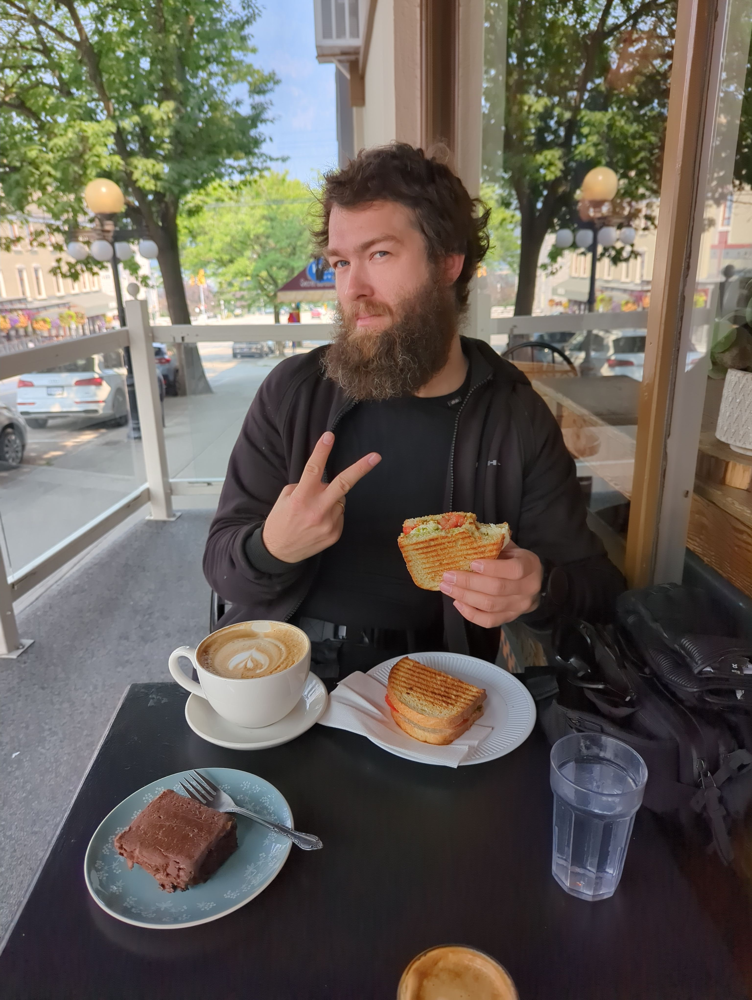
(Tomasz) So yesterday we woke up in the tent in Nelson.
(Brent) In the Nelson City campground.
(Tomasz) What time did we wake up actually?
(Brent) It was like 8:39, something that.
(Tomasz) No, it was not so bad.
(Brent) Maybe a little earlier.
(Tomasz) Yeah, I don’t remember exactly, but it was early enough I remember that we finished parking what, like quarter to 11? Or something like this. Like we set off 15 or 20 minutes before the checkout time. Yeah, but we parked, we actually managed to take a shower. So like, the campsite grounds were really well equipped, right? I mean, I haven’t been to a campsite yet with washing machines, microwaves.
(Brent) Right!
(Tomasz) And, you know.
(Brent) Well it is in the middle of the city.
(Tomasz) Yeah, so that was really great. And it’s great that they had showers, although showers had left a little bit to be desired. But it was more than a welcome having them, right?
(Brent) Utility.
(Tomasz) At least we had the flip-flops to like… To not expose our feet to the… To the “surfaces”. And we had our own little soap thingy, that came in handy for the first time. Like properly handy, because until now it was a nice to have, and then it was like, oh we actually have soap!
(Brent) Quite the highlight.
(Tomaswz) Then we went to have coffee. So we went to have coffee and I had breakfast at the nice coffee place. What’s the place called?
(Brent) John Ward.
(Tomasz) John Ward in Nelson Coffee was nice. It was somehow… the niceness of the , because the coffee was quite subtle, the taste was like, nice and smooth, but it was a little bit overshadowed for me by this brownie I had. So the panini was nice and smooth, then the brownie was very flavorful. And I couldn’t really feel the taste of coffee afterwards. It was just too much brownie.
(Brent) It kind of killed it?
(Tomasz) Yeah…
(Brent) Well, that’s their fault having a bad pairing for coffee.
(Tomasz) Well, not really. I mean it’s your choice. Also, I already had some of the coffee with the panini. So by the time I went to the brownie, I didn’t have much left and I was just like… All brownied up. I didn’t want to waste food though. So I finished it. Then we went to one outdoor place, did we buy anything there? No. We only bought things in one outdoor place, right?
(Brent) Yeah, yeah.
(Tomasz) So we went there, they didn’t have GoPro mounts, didn’t have running shoes or anything, and we went to this… Or did we go to the sports place first? We go to sports place first or the mountain? Yeah, then we went to a second shop, you bought the paracord for Pete.
(Brent) Ah yeah!
(Tomasz) Yeah, and then we went to a sports place and the first sports place just had basically enough stock to find something for you. So we got you nice Brooks, whatever they are called. Are they called adrenaline or something?
(Brent) You’re sitting on them.
(Tomasz) If it sits it fits.
(Brent) Yeah.
(Tomasz) Brooks Cascadia, kinda like Canadia.
(Brent) Just use a marker.
(Tomasz) Yeah, so you got Brooks shoes, which is nice because I am a fan of Brooks shoes. I’m wearing them now on.
(Brent) Right?
(Tomasz) And they told us that there’s a Best Buy that opened in the mall and they’ll have GoPro mounts. You called Best Buy and they just were like: “yeah of course, everything’s here for you, just waiting”. We drove down, was there, we bought it, installed the equipment and then we were… Yeah, good to go with recording. The only problem was we had basically one and a half battery left. Actually not even… One was full and the other was more like… Actually like 20%, so there’s very little recording from that day actually. There’s only a few clips. So we got the nice and really solid GoPro mounts but then didn’t actually to take advantage of it. But it’s not like it’s going away anywhere, I will keep using these so it’s fine. Then we were riding. How was the riding from Nelson? I think the beginning was decent but we were stuck behind cars most of the time, right? Actually no, the beginning to the ferry was good!
(Brent) Yeah.
(Tomasz) Then the ferry was nice and we got to speak to a racist grandpa, as you do.
(Brent) who’s lived everywhere.
(Tomasz) I mean that’s the thing, you’d kind of figure that a person who’s kind of… Who lived in a lot of places and moved up in society… To be a little bit more open? But at some point people just try to build a narrative that fits their world view as opposed to adjusting their worldview based on the world around them. And I mean if he lived in the two-and-a-half million pound house in London and he’s…
(Brent) A particular world view…
(Tomasz) He’s gonna be a little bit skewed yeah. And also really I find this fascinating how he, having been so wealthy while he lived in the in the UK was somehow bothered by the poor immigrants? As if that ever affected him in any way. And he probably has never fucking spoken to one of them or like lived among them. But it’s kind of… It’s hard because it makes you wanna like, debunk it, when you talk to someone like this, especially having lived that life and having been, you know, going through all the steps of getting like, child benefit and housing benefit and all of this in the UK, and just being on the receiving end of it, and just saying like: “sorry but you like… you don’t know what you’re talking about” but without being arrogant. Yeah? Because he has lived longer than us by a considerable amount and he has seen things right? So you can’t deny him experience and if you’re just gonna tell him like: “no you’re dumb”, then this is not gonna change his mind. So I try to be diplomatic about it, and it did seem like he was taken aback a little bit. Was he?
(Brent) Yeah.
(Tomasz) But yeah, it’s also a little bit hard when you move from a society like you were in the UK where people are mostly accepting of immigrants, to a place like Germany where they’re not, and when you’re being on the receiving end of the of the immigrant hate you just start thinking like, okay… It could be anybody. I mean it’s me now, but if you as a Canadian were forced now to live somewhere else and you would be on the receiving end you’d have a different opinion very quickly about what is acceptable and what is not acceptable when it comes to immigration policies and benefits and stuff and whatever… Because in the end there are way bigger problems that cause economic issues for a country than benefit scam. Benefit scams are dropping the ocean, right? And then that that is also juxtaposed with the fact that the guy loves trump.
(Brent) Yeah!
(Tomasz) Somehow in his opinion that’s the fix to the poverty problem. It’s just like, one millionaire to another: “Yeah, let’s fix the problems by… Uh… making corporations more money! :et me let me fire up my cigar!
(Brent) “That’ll solve everything!”
(Tomasz) Yeah… So that was fun. A shame we didn’t fucking record the sound of the conversation. That’s hilarious. So we just figured out all of the recordings we took with a little gopro didn’t have sound because I fucked up and turned off the sound recording by accident. Yeah, so the ferry was great, couldn’t see shit because it was so cloudy…
(Brent) It’s too bad!
(Tomasz) Yeah I mean, I don’t know what I missed because all I saw was… Like the intro into the “Alone in the Dark” movie where they go in and everything is just covered in mist, you know. Or was it “Silent Hill? No, it’s “Silent Hill” where it is so misty. Old “Silent Hill” movie, that’s what it felt. Like, and then we got off the boat and the grandpa just like, fucking raced off in his Yaris…
(Brent) I know, that was so funny!
(Tomasz) He just hammed it! And he even made us… He even like, make space for us to like, make us jump in the queue because he thought we’re gonna like, smash it down the road on our bikes,
(Brent) He probably wanted to watch us.
(Tomasz) Yeah… And then we just immediately parked. Then he was like, okay, screw it, I’m going! “Screw you guys I’m going home!” Um, Jesus, and then… And then the rest of the trip to… Was it Creston? Yeah, it’s kind of… It’s kind of okay. It’s kind of, not as exciting because we just had a lot of traffic in our way. Creston itself, we had a nice meal in a thai restaurant. I was starting to get really hungry at that point, so if we left the campsite at… We left the town at quarter past twelve? It’s actually been later I think. We left the town center around quarter past twelve and then we went to get the gopros. So wse left the town itself closer to one. So we were in Creston at about four or five I think?
(Brent) No wonder you were hungry.
(Tomasz) We had late breakfast, we had breakfast around 11:30 or something like this. Yeah, and then after Creston we decided to get lost because we had too much fuel in our tanks clearly, and we need to waste it a bit so we went to see… To wave to the, you know, American border crossing guards, and just leave them in the dust cloud.
(Brent) That was not the intention but it happened. (Tomasz) What do you mean, you’ve completely planted it, you’re just pretending now. You just wanted me to not have enough fuel to get home.
(Brent) It’s surpisingly close though.
(Tomasz) It’s a conspiracy. Then, uhm, yeah we went back, then we were just like, completely were just smashing it down, churning the miles, just to get home. It wasn’t even so bad, that road. It was okay. Better than the motorway on the first day and definitely better than the motorway the second day. Yeah, and then I was starting to get nervous because… Actually not even nervous, I didn’t care. If like, one of us has no fuel then the other one just goes on the bike and brings some fuel. So like, fuck it, right? Or we call your brother because we’re close by then and he can fix us.
(Brent) Yeah.
(Tomasz) Fix us up. But uh, let’s make sure we’re recording.
(Brent) Is there sound?! We saw that biker on the side of the road?
(Tomasz) Yeah we stopped for a biker to see if we can help him, because we saw someone broke down and it was obviously a Harley. I mean, who else would break down? And he just lost bolts because that’s something that happens frequently.
(Brent) I know! I couldn’t believe it! He’s like: “Yeah, this has happened a couple times…”. Bolts just fall out…
(Tomasz) Then he’s like: “Yeah I just need to fix my gear lever to the little shaft with some wire”.
(Brent) It’s like, dude they have thread locker, like it’s a thing!
(Tomasz) Yeah I wasn’t gonna like… We’re there to help him, not to like… To talk him down, you know… So it’s like: “Um, actually… You’re a dumb ass.”
(Brent) “You messed up”.
(Tomasz) So yeah, it was nice chatting. Everybody in general, everybody all the time is nice. Oh yeah, we had a nice chat with a cop and two motorcyclists.
(Brent) That’s true.
(Tomasz) In Nelson, right? About the BMWs they were riding. Yeah, it was fun. And then, yeah… On like… I just kept watching the signs for Crambrook, because it was like, 30km to Crambrook… My bike was showing 20. Great. Then 20 left to Crambrook, and my bike was showing 10. And then 10 to Crambrook and my bike was showing zero. I just kept going and going. Uh, yeah, and just to add to the fun my clutch lever started catching.
(Brent) Oh yeah.
(Tomasz) And it wasn’t dangerous, there wasn’t like, anything. You can always… I mean, in a pinch you can dry shift like, whatever. It’s not good for the bike but you will live. Um, but the worst thing was my screen just decided to have a fucking seizure. It was just strobing on and off the backlight.
(Brent) That’s terrible…
(Tomasz) Anytime I like, accelerate and being like, in the vibration range it would just go: “on off on off”. Yeah, so I think we made it home just in time before I went crazy with this bike. If I had to ride a full day like this it would start getting old very quickly.
(Brent) Well, we would have fixed the clutch.
(Tomasz) I was just gonna let you fix it now. But the screen, I don’t know, I mean, we could have probably taken apart the like, digital assembly and see if something is loose.
(Brent) Who knows.
(Tomasz) But the problem is when you stand static it’s not a problem. It’s only when you’re moving.
(Brent) Yeah, so to test it you have to get them going.
(Tomasz) Or, you’re just like: one person is doing the cables and the other is just shaking it. Yeah, and then we came home to a nice welcome. Warm welcome by Brent’s family and it was very lovely and I got a beer and you got, what did you get?
(Brent) Wine.
(Tomasz) I think wine and we were just like, reminiscing the fabulous Budget Bike Battle Banff.
(Brent) We didn’t actually go to Banff!
(Tomasz) Woops! Yeah, there you go. That was the day. Oh yeah, and then we went to bed.
Day 12
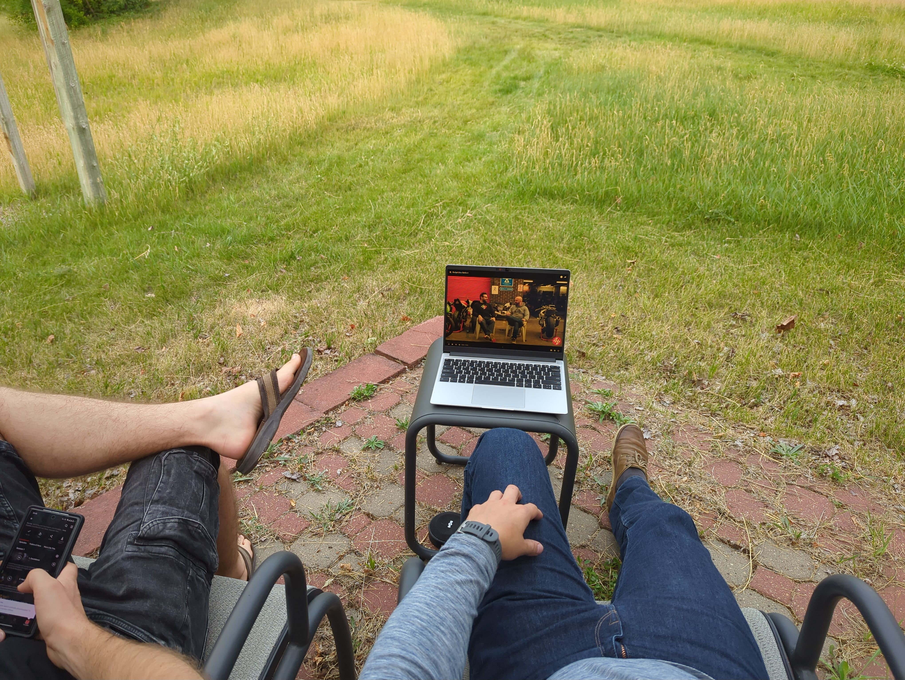
(Brent) Ah, journal time. Yesterday…
(Tomasz) Can you remember anything?
(Brent) Well I guess I podcasted yesterday, but before that we did breakfast.
(Tomasz) Did we do… Oh, yeah… All right, yeah, so, woke up, came to bother you a bit. Actually… I actually had breakfast in the morning already. Then we went to Kaylyn and Aaron, because they said they would make nice breakfast for us. Then I thought it would be way nicer if I actually run before, so I went for a nice run. So yeah, you do have some… Nice, more tame roads for running in the end, just have to, you know, go and explore and then, you know, make a little map of your favorites. I was actually tempted to send you out for a run yesterday. I wanted to see what your shoes are like. Are you gonna run today?
(Brent) Today would be a great day for a run.
(Tomasz) I think so. What does your watch say?
(Brent) It said that had a certain pace thing to do.
(Tomasz) Show us. No, you have to start an activity. Try to start an activity. Yeah, so you’re doing, uh, this is tempo. Yeah so this is like, medium pace. Yeah, I think you should do it because it’s a nice interval thingy. Nine minutes at like, medium pace, with three minutes recovery. This looks like fun.
(Brent) Nice.
(Tomasz) Good test for your shoes. So yeah, I went for a run on a nice gravel track, only had to do a brief moment on the road and it seemed like, every road user that did pass me respected me and gave me lots of space.
(Brent) Good.
(Tomasz) I mean, it’s not always easiest because it’s a double yellow there, and but there’s plenty enough space off the road for you to run on as well. Then I came back, had a quick shower, had some nice breakfast. We had like, fried eggs with onions and stuff?
(Brent) Yeah I think there was like, a vegan meat.
(Tomasz) Okay, cool. And yeah, some tomatoes and a very nice pineapple.
(Brent) It was perfect.
(Tomasz) So much pineapple. Oh yeah, and Aaron made us his nice coffee, it was also very tasty. And then you postcasted. I went to do my check-in for the flight, which was easy. I got to select my seats this time.
(Brent) Yay!
(Tomasz) Yeah, because last time when I checked in every… Any seat that was selectable I’d have to pay. Yeah, so I didn’t, right? Yeah, and this time there was still a bunch of empty ones…
(Brent) Great.
(Tomasz) …that I could pick for free. So I just picked something by the window on all three flights. Um, then I went to pack most of my stuff, except the stuff I was wearing already. I washed my running clothes from earlier, hung them out to dry and then I went with Aaron and Kaylyn to town to just, you know help, them in the renovation efforts, since Brent was busy podcasting anyway, I thought I might as well go with them and just do something nice. Which was nice, got to learn a lot about practicalities of doing house maintenance with the infamous, what you call it, stud based wall thingies, that you can’t just drill wherever you want.
(Brent) Yeah, they’re massive spaces.
(Tomasz) Yeah, you just have plasterboard everywhere. Which, I mean, I’m no stranger to plasterboard, but… Um, yeah, every time I try to say: “oh let’s just like, screw, drill here” and I’ve caught myself out like, actually: “no, you can’t just drill here”… Here you have some limitations. That was funny, and you have funny square head screws as well.
(Brent) Yes, those are Canadian.
(Tomasz) Yeah, Aaron said it’s a Canadian standard, it only exists here.
(Brent) Pretty much.
(Tomasz) Uh, also Aaron has a funny drill, where like… So when I have just my battery hand drill, it’s smooth. But Aaron’s drill just goes in steps.
(Brent) Yeah, those are called impact drivers.
(Tomasz) Yeah.
(Brent) They… in the end make it easier. And they grip better and all this stuff. And they’re lighter, et cetera, et cetera…
(Tomasz) I found that to be the opposite at the beginning.
(Brent) Yeah, same.
(Tomasz) It just felt like it just keeps slipping because every step is so big, and then it stops and… But then I was like, oh you can actually change the speed.
(Brent) That’s true.
(Tomasz) So I lowered the speed and then it was nice. However, I mean, um yeah, it’s interesting. I need to see if they exist in Germany.
(Brent) They do.
(Tomasz) They probably do.
(Brent) I owned one for the longest time because I bought a kit that was like, a normal drill and one of these impact drills, and I didn’t use it for a couple years and Aaron convinced me. He’s like: “No no like, try it!” And sure enough like, once you get used to it, it’s amazing, and you never go back.”
(Tomasz) Yeah, so I might i might be up for another purchase. Another thing that we don’t have time to get, I need to see if they exist in Germany, is those inflatable pillow things that you can wedge stuff up
(Brent) Those are for leveling things.
(Tomasz) Because I really struggle with leveling washing machines and stuff.
(Brent) Super useful for that.
(Tomasz) And this would be perfect, and they only like, we said like 20 dollars a pack that’s like, a couple of them. And he was like: “Yeah, we can go to the shop and get it.” And we forgot. But they must exist in Europe because the ones he has are made in Denmark.
(Brent) Okay, that kinda gives it away, doesn’t it?!
(Tomasz) So yeah, that was fun. It was a fun experience helping him and, you know… He’s just living that the lifestyle that… That I at least only got to see in youtube, whenever LTT does their stupid home makeovers.
(Brent) Oh man…
(Tomsaz) Now I get to see, I get to see how it works.
(Brent) Did aaron show you a stud wall? Like, did you go into the mechanical room and see how…?
(Tomasz) Yes we did, I mean, I have kind of seen it because, like I said, I have built, helped build plaster walls before.
(Brent) Okay.
(Tomasz) But they’re usually small connecting walls when you divide the room, they’re not just your…
(Brent) Structural…
(Tomasz) Yeah, I mean obviously these are not structural walls like, this, the structure is carried by some pillars and stuff I guess or whatever? No? Okay. So if you have a multi-story building, how is the second floor propped?
(Brent) Yeah, it’s built on the same…
(Tomasz) …on the same wooden frame. Yeah, okay, fair enough. Yeah that doesn’t exist, it’s just dividing walls. But we have it, if you want to split a room or something, I actually built, designed and built one with a door inside, in berlin. I always overbuild them, I always add way too much wood and way too much, uh…
(Brent) We have like, such… We don’t even think about it, but they are such a well understood standards that for doing things like doors and windows…
(Tomasz) It’s almost like Lego, it’s just like “block block block block block…”
(Brent) Yeah but also you have to think about like, force distribution, so above doors and windows you usually have like, a bit of a beam, that transfers those particular members over to the next ones.
(Tomasz) Yeah.
(Brent) That’s kind of interesting actually.
(Tomasz) I kind of did that when I built my plaster wall with a door, I actually had a hanging door, so the door was hanging off from the top beam.
(Brent) Okay.
(Tomasz) Um… But yeah, super fun actually. Considering like, it was just a simple chore thing. Yeah. And yeah, he was… Fun fact, before you came Aaron was just on his phone and I did all the leveling and adjusting and screwing, and just when you came…He’s like: “Oh, you’re just watching”. I did all of it, and then Aaron like just stepped in as you came in.
(Brent) That’s hilarious.
(Tomasz) He just constantly kept getting phone calls from Vance, because Vance was on some sale somewhere.
(Brent) Yeah yeah, for the tires or whatever.
(Tomasz) There was some construction company going… Going under and they were doing a sale of all of, whatever they owned, and just found so much, and he was like: “Yeah do you want this? Do you want this?” And he was just like, on the phone the whole time and I was like, plucking away.
(Brent) That’s funny.
(Tomasz) Yeah, then we went and had lunch/dinner, in the fire hall again, and oh my God you can have poutine as a side! I was like: “Oh yes!”.
(Brent) I know, right? And you can pick any poutine!
(Tomasz) I can have… I can have a second meal as part of the first meal? Oh yes please! So yeah, the burger was nice, it wasn’t like, the nicest burger I’ve ever had, um… Actually a lot of like, the burgers in Berlin we order are usually a little bit larger in diameter, and they are… This one was a little bit on the dry side.
(Brent) Okay.
(Tomasz) But that has… That’s like, it’s whatever you like, right? Um, usually when you order something that has more sauce in it, it eventually dissolves, so it can be messy. So yeah, that’s what you want, but all in all it was a very tasty meal. This like, poutine with pulled pork is just so, so amazing. And you even managed to wrangle them into making you a vegan, gluten-free one.
(Brent) Yeah, took a bit but we got it.
(Tomasz) Yeah so now you know what to do, you can just go there and have it.
(Brent) Although mine was so big, I could have just used the side. But it was like…
(Tomasz) Yeah, when I looked at it, I at first thought that this was the plate to share between Kaylyn and Aaron…
(Brent) Yeah, I know, right?
(Tomasz) And I was like, “Oh no! That’s just Brent’s meal…” Oh my God, okay… I mean, you still have it, right?
(Brent) I still have half of it.
(Tomasz) Yeah, uh, then we, well, we came home, and finished packing, I asked you for some cleaning supplies and then we watched the shit out of bbb.
(Brent) Yeah we did!
(Tomasz) I did it with sunglasses on to pretend like I care about sunlight blocking. But at least we got to spend some time outside because the weather was nice. It was just the right temperature to sit outside.
(Brent) It’s true, that was a great idea.
(Tomasz) And, following that, we did the finances. In the end I owe you like 250 euros.
(Brent) The total trip, I looked up, was uh… 2100 Canadian dollars, not including like, mechanical stuff for the motorcycle.
(Tomasz) Would you consider that reasonable? This is for two people right?
(Brent) Yeah, I thought so.
(Tomasz) And this includes food and fuel right?
(Brent) Food, fuel and hotels.
(Tomasz) And we did not hold back on food.
(Brent) No no, the food was… We could have did better on food. But we kind of splurged.
(Tomasz) Yeah, I mean, it’s holidays, right? You’re, you’re just, uh, doing things to to enjoy it and try new things.
(Brent) McDonald’s. So we could have spent a little less but I think we did pretty well, like, camping was a great way to save money.
(Tomasz) Yes for sure, because like…
(Brent) 20 to 30 dollars per night.
(Tomasz) Instead of 250.
(Brent) It’s like 10 times less.
(Tomasz) Yeah, so, I think for sure we did everything right. Everything worked out, you know, way… I’d say it was, in the end, set up perfectly for a balance of cost and enjoyment.
(Brent) Nice.
(Tomasz) I wouldn’t have changed any of it.
(Brent) I agree.
(Tomasz) Which is why I asked you, like, what do you think? Because like, every person has a slightly different outlook on finances, but for me this good.
(Brent) Yeah, I thought it was great.
(Tomasz) Yeah, I mean, this also included like, Senas which were 250 a pop.
(Brent) Also a splurge.
(Tomasz) Yeah, but well worth it. And then finally we went to bed right? Yeah, I thought I’m gonna shower but I thought, ah fuck it, because I probably have to shower in the morning anyway. And I already showered after the run.
(Brent) Okay.
(Tomasz) So I went to bed. Make sure everything is charged and plugged in and stuff. Yeah, that’s it. And we are here.
(Brent) Where are we now?
(Tomasz) Now we’re just sitting on a bench right next to a cliff, just on Aaron’s property. Just looking out down towards the the marshlands just below and the rail track in the distance. On the backdrop of mountains.
(Brent) I thought maybe we’d seen Angelette. No such luck.
(Tomasz) Next time.
(Brent) Maybe.
Day 13
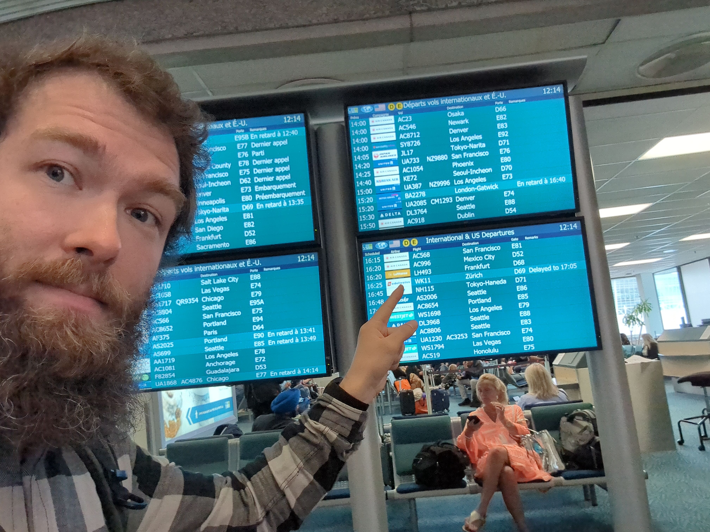
So it’s not the end of the day yet but the trip is over and I’ve actually been, I guess traveling for more than a day or let’s say… I’ve been awake for probably 24 hours at this point or more. Morning was easy, no problems. Got up, cleaned up the cabin, had breakfast, washed the bathroom, especially just to make sure I leave it in at least the same condition as I found it. And I went to Brent’s cabin, the cats, they probably felt like… They could feel like I was leaving or something. But yeah after, two weeks of being there they finally got used to me. Which is kind of funny, just at the end.
Aaron and Kaylyn… Kaylyn was on a phone call in the morning, but before I left they got dressed in the sweaters that Eli made for them for Christmas. We took a group photo, which was very, very pleasant. Nice touch. We said goodbye, went to the airport. Again, no issues. The airport, as before, is not… Arriving there again, it seemed way smaller at the first sight. We got some water from the water fountain. First flight no problems, second flight also no problems, I sat next to a very wide lady, although it’s still much better than what I had to go through before.
Fun fact, on the first tiny airplane I’ve flown with to Vancouver my phone was detecting my luggage somewhere below us, I guess, in the storage hold, and also on the big Boeing jet! It would momentarily make me lose track of it and send me information that, you know, I was losing track of it. I will check where it is now, last time, we will see. No, I still don’t (detect my luggage).
This is beautiful, quite beautiful, really beautiful. (I just received the message that my luggage did not make it onto my flight from Frankfurt to Berlin). Which is ironic, because on the way to Canada I couldn’t detect it and I wasn’t able to track it the whole time.
So I had to fill out a form and now it (my luggage) is shipped (to my house).
Interesting fact. The way the plane flies… It goes far enough north that it never actually gets dark on the plane. So they just turn off the cabin lights. I guess everybody closes windows and they pretend it’s night time. So I did manage to get some sleep. Garmin says I only managed to get one hour sleep, but I was kind of on and off. Definitely not high quality sleep. But I got the impression that the day has passed. I have to say I was really happy to be back in Berlin, even without the suitcase.
Yeah, we are back. Not with everything, but this suitcase only had clothes, so that’s OK.
24162 Words
2024-08-16 07:51